Dockerfile = สูตร
ชุดคำสั่งที่ทำซ้ำได้: ใช้ระบบตั้งต้น, คัดลอกไฟล์, ติดตั้งแพ็กเกจ และตั้งคำสั่งเริ่มแอป
เริ่มจากทบทวนคำสั่ง แล้วอ่านสูตร Dockerfile, build/run, cache, CMD/ENTRYPOINT และ ENV ก่อนส่ง image เข้า registry เชื่อมหลาย container ด้วย network และ Compose แล้วปิดด้วย multi-stage และตัวอย่างใช้งานจริง
12 ตอน · ทบทวน → พื้นฐาน → ลงมือทำ → เจาะลึกจะได้อะไรจากตอนนี้: ทบทวนคำสั่งที่เคยใช้ และรู้ว่าคำสั่งใดจะกลับมาใช้ในครั้งที่ 2
ครั้งที่ 1 เราใช้คำสั่งเหล่านี้กับ image สำเร็จรูปไปแล้ว ครั้งนี้จะสร้าง image เองจาก Dockerfile ตารางนี้เปิดย้อนดูได้ตลอดบทเรียน
| คำสั่ง | ทำอะไร | ตัวอย่าง/option ที่พบบ่อย | ตัวอย่างจริง + ผลการรัน |
|---|---|---|---|
docker run | สร้างและเริ่ม container ในคำสั่งเดียว | -d เบื้องหลัง, -it โต้ตอบ, --name ตั้งชื่อ, -p host:container, -e ตัวแปร, -v เมานต์ | # -d รันเบื้องหลัง, --name ตั้งชื่อให้เรียกง่าย, -p 2280:80 ต่อพอร์ต 2280 ของเครื่องเข้าพอร์ต 80 ใน container docker run -d --name devtools-lifecycle -p 2280:80 nginx:alpine 353b784ecb782f0e16703b51c69261557b315c20e3eeb02070dfdbfbb138ff07 # เลขยาว 64 ตัวคือ container ID เต็ม — ที่เห็นใน docker ps คือ 12 ตัวแรก (353b784ecb78) |
docker ps | ดู container ที่กำลังรันอยู่ตอนนี้ | --filter name=... กรองตามชื่อ, --format เลือกคอลัมน์ | # เห็นเฉพาะตัวที่กำลังรัน — ตัวที่หยุดแล้วจะไม่โผล่ docker ps CONTAINER ID IMAGE STATUS NAMES a30e4b6c5a33 nginx:alpine Up 2 seconds devtools-debug # STATUS ขึ้นต้นด้วย Up = กำลังทำงาน |
docker ps -a | ดู container ทั้งหมด รวมตัวที่หยุดไปแล้ว | -a = all — ใช้ตอนหา container ที่ "หายไป" จาก docker ps | # เติม -a จะเห็นตัวที่หยุดแล้ว (Exited) เพิ่มขึ้นมาด้วย docker ps -a CONTAINER ID IMAGE STATUS NAMES 6c4e951aa7f0 nginx:alpine Exited (0) 2 seconds ago devtools-stopped a30e4b6c5a33 nginx:alpine Up 2 seconds devtools-debug # Exited (0) = จบการทำงานปกติ ถ้าเลขไม่ใช่ 0 แปลว่ามีข้อผิดพลาด |
docker stop | หยุด container (ข้อมูลข้างในยังอยู่ ไม่ได้ถูกลบ) | docker stop <name> ส่ง SIGTERM รอ 10 วิ แล้วค่อย SIGKILL | docker stop devtools-lifecycle devtools-lifecycle # พิมพ์ชื่อกลับมา = หยุดสำเร็จ ตรวจซ้ำด้วย docker ps -a docker ps -a CONTAINER ID IMAGE COMMAND STATUS NAMES 353b784ecb78 nginx:alpine "/docker-entrypoint.…" Exited (0) 1 second ago devtools-lifecycle # docker ps เฉยๆ จะไม่เห็นแล้ว ต้องใช้ -a |
docker start | เริ่ม container ที่หยุดอยู่ ให้กลับมาทำงาน (ข้อมูลเดิมยังอยู่) | docker start <name>, -a ดู output ด้วย | # เรียกด้วยชื่อเดิมได้เลย ไม่ต้องระบุ -p / -v ซ้ำ เพราะ Docker จำค่าตอน run ไว้แล้ว docker start devtools-lifecycle devtools-lifecycle # พิมพ์ชื่อกลับมา = เริ่มสำเร็จ ไฟล์ที่เคยแก้ไว้ข้างใน container ยังอยู่ครบ |
docker restart | หยุดแล้วเริ่มใหม่ในคำสั่งเดียว | docker restart <name> — ใช้ตอนแก้ config แล้วอยากให้โหลดใหม่ | docker restart devtools-lifecycle devtools-lifecycle # ตรวจด้วย docker ps — CONTAINER ID เดิม แต่ STATUS นับเวลาใหม่ docker ps CONTAINER ID IMAGE COMMAND STATUS NAMES 353b784ecb78 nginx:alpine "/docker-entrypoint.…" Up Less than a second devtools-lifecycle |
docker rm | ลบ container ทิ้ง — ต้องหยุดก่อนถึงจะลบได้ | docker rm <name> — ถ้ายังรันอยู่จะถูกปฏิเสธ | # ลองลบตอนที่ container ยังรันอยู่ → Docker ปฏิเสธ docker rm devtools-lifecycle Error response from daemon: cannot remove container "devtools-lifecycle": container is running: stop the container before removing or force remove # ทางแก้: docker stop ก่อน แล้วค่อย docker rm หรือใช้ -f (แถวถัดไป) |
docker rm -f | บังคับลบ = หยุด + ลบให้เลยในคำสั่งเดียว | docker rm -f <name> — สะดวกตอนทำแล็บ แต่ระวังลบผิดตัว | # -f (force) ไม่ต้อง stop ก่อน docker rm -f devtools-lifecycle devtools-lifecycle # ตรวจซ้ำ: เหลือแต่หัวตาราง แปลว่าถูกลบแล้วจริง docker ps -a --filter name=devtools-lifecycle CONTAINER ID IMAGE COMMAND CREATED STATUS PORTS NAMES |
docker run --rm | ให้ Docker ลบ container ทิ้งอัตโนมัติเมื่อทำงานจบ | เหมาะกับงานรันครั้งเดียว ไม่ทิ้งขยะค้างระบบ | # รันคำสั่งเดียวแล้วจบ ไม่ต้องตามลบเอง docker run --rm --name devtools-lifecycle-tmp nginx:alpine echo "hello from container" hello from container # ตรวจซ้ำ: ว่างเปล่า (ถูกลบอัตโนมัติแล้ว) docker ps -a --filter name=devtools-lifecycle-tmp CONTAINER ID IMAGE COMMAND CREATED STATUS PORTS NAMES |
| คำสั่ง | ทำอะไร | ตัวอย่าง/option ที่พบบ่อย | ตัวอย่างจริง + ผลการรัน |
|---|---|---|---|
docker logs | อ่าน log ที่ container พิมพ์ออก stdout/stderr — จุดแรกที่ควรดูเวลามีปัญหา | --tail N ดูแค่ N บรรทัดท้าย, --since 10m ดูย้อนหลังตามเวลา | # ดู log ทั้งหมดที่ container พิมพ์ออกมา docker logs devtools-debug 2026/08/13 22:24:41 [notice] 1#1: start worker process 61 172.17.0.1 - - [13/Aug/2026:22:25:02 +0000] "GET / HTTP/1.1" 200 896 "-" "curl/8.5.0" "-" 2026/08/13 22:25:02 [error] 30#30: *2 open() "/usr/share/nginx/html/missing" failed (2: No such file or directory), client: 172.17.0.1, request: "GET /missing HTTP/1.1" 172.17.0.1 - - [13/Aug/2026:22:25:02 +0000] "GET /missing HTTP/1.1" 404 153 "-" "curl/8.5.0" "-" # เห็น 200 (สำเร็จ) และ 404 (หาไฟล์ไม่เจอ) พร้อมบรรทัด error บอกสาเหตุ # log ยาวมาก ใช้ --tail ดูแค่ท้ายๆ docker logs --tail 2 devtools-debug 2026/08/13 22:24:41 [notice] 1#1: start worker process 60 2026/08/13 22:24:41 [notice] 1#1: start worker process 61 |
docker logs -f | ติดตาม log แบบสด — ค้างรอ แล้วพ่นบรรทัดใหม่ทันทีที่เกิดขึ้น | -f = follow, มักใช้คู่กับ --tail เพื่อไม่ต้องดูของเก่าทั้งหมด | # ค้างรอ แล้วพ่นบรรทัดใหม่ออกมาทันทีที่มี request เข้ามา (ใช้ดูปัญหาสดๆ) docker logs -f --tail 1 devtools-debug 2026/08/13 22:39:21 [notice] 1#1: start worker process 61 172.17.0.1 - - [13/Aug/2026:22:39:35 +0000] "GET / HTTP/1.1" 200 896 "-" "curl/8.5.0" "-" 172.17.0.1 - - [13/Aug/2026:22:39:37 +0000] "GET /health-check HTTP/1.1" 404 153 "-" "curl/8.5.0" "-" ^C <-- ค้างอยู่จนกว่าจะกด Ctrl+C เพื่อหยุดติดตาม (container ไม่ได้หยุดตาม) |
docker exec <name> <คำสั่ง> | สั่งรันคำสั่งเดียวข้างใน container แล้วจบ ไม่ต้องเข้า shell | เหมาะกับเช็คไฟล์/เวอร์ชันเร็วๆ เช่น cat, ls | # เช็คว่า container นี้ใช้ OS อะไร docker exec devtools-debug cat /etc/os-release NAME="Alpine Linux" ID=alpine VERSION_ID=3.23.5 # ดูไฟล์เว็บที่ nginx เสิร์ฟอยู่ docker exec devtools-debug ls /usr/share/nginx/html 50x.html index.html |
docker exec -it <name> sh | เข้า shell แบบโต้ตอบ พิมพ์คำสั่งต่อเนื่องได้เหมือน ssh เข้าเครื่อง | -i รับ input, -t ให้มี prompt; image ที่มี bash ใช้ bash แทน sh ได้ | # / # คือ prompt ข้างใน container — พิมพ์คำสั่งต่อได้เรื่อยๆ docker exec -it devtools-debug sh / # whoami root / # pwd / / # ls /usr/share/nginx/html 50x.html index.html / # cat /etc/alpine-release 3.23.5 / # exit # พิมพ์ exit เพื่อออกจาก shell — container ยังรันต่อตามปกติ |
docker inspect | ดูค่า config ทั้งหมดของ object เป็น JSON (IP, port, mount, สถานะ) | โครงสร้างที่ต้องเข้าใจก่อน: docker inspect คืนค่าเป็น JSON แล้ว --format คือการ"เจาะ"เข้าไปหยิบเฉพาะค่าที่ต้องการไวยากรณ์ --format (Go template){{.A.B}} = ไล่ลงไปตามชั้นของ JSON เช่น {{.State.Status}} คือ key State แล้วเข้าไปเอา Status{{range ...}}{{end}} = วนลูป เมื่อค่าเป็น list หรือ map (เช่น Env, Networks, Mounts){{index ค่า 0}} = หยิบสมาชิกลำดับที่ 0 ของ list{{json ...}} = แสดงค่านั้นเป็น JSON ดิบ (ใช้ตอนค่าซ้อนหลายชั้น){{println .}} = ขึ้นบรรทัดใหม่ให้แต่ละรอบของ rangeoption อื่น -f = ตัวย่อของ --format (พิมพ์สั้นกว่า ผลเหมือนกัน)--type=container / --type=image = บังคับว่าให้หาเฉพาะชนิดนั้น กันกรณี container กับ image ชื่อชนกันใส่หลายชื่อต่อท้ายได้ เพื่อ inspect หลายตัวพร้อมกัน ชื่อ key ต้องสะกดตรงเป๊ะ (ตัวพิมพ์ใหญ่-เล็กสำคัญ) ถ้าผิดจะขึ้น map has no entry for key | # --format เจาะเข้าไปหยิบทีละค่า docker inspect --format '{{.State.Status}}' devtools-insp running # -f คือตัวย่อของ --format ผลเหมือนกันเป๊ะ docker inspect -f '{{.State.Status}}' devtools-insp running # {{range}} ใช้ตอนค่าเป็น list — {{println .}} ให้ขึ้นบรรทัดใหม่ทุกรอบ docker inspect -f '{{range .Config.Env}}{{println .}}{{end}}' devtools-insp APP_ENV=production PATH=/usr/local/sbin:/usr/local/bin:/usr/sbin:/usr/bin:/sbin:/bin NGINX_VERSION=1.31.3 # {{index ... 0}} หยิบเฉพาะสมาชิกตัวแรกของ list docker inspect -f '{{index .Config.Env 0}}' devtools-insp APP_ENV=production # {{json ...}} ใช้ตอนค่าซ้อนหลายชั้น อยากเห็นทั้งก้อน docker inspect -f '{{json .Config.ExposedPorts}}' devtools-insp {"80/tcp":{}} # --type บังคับชนิด กันชื่อ container กับ image ชนกัน docker inspect --type=container --format '{{.Name}}' devtools-insp /devtools-insp docker inspect --type=image --format '{{.Os}}/{{.Architecture}}' nginx:alpine linux/amd64 # สะกด key ผิด (Runing แทน Running) จะฟ้องชัดเจนว่าไม่มี key นี้ docker inspect -f '{{.State.Runing}}' devtools-insp template parsing error: template: :1:8: executing "" at <.State.Runing>: map has no entry for key "Runing" |
docker container inspect | เหมือน docker inspect แต่เจาะจงว่าหาเฉพาะ container | ใช้ทุก option เหมือน docker inspect ได้หมด แต่มีเพิ่มเฉพาะ container:--size (หรือ -s) = คำนวณขนาดดิสก์ที่ container นี้ใช้ จะได้ 2 ค่าเพิ่มมา• {{.SizeRw}} = ขนาดที่ container เขียนเพิ่มเองหลังเริ่มรัน• {{.SizeRootFs}} = ขนาดรวมทั้งหมด (image + ที่เขียนเพิ่ม)path ที่ใช้บ่อย {{.Name}} ชื่อ (มี / นำหน้า){{.State.Status}} สถานะ · {{.State.ExitCode}} รหัสตอนจบ{{.Config.Image}} image ที่ใช้สร้าง · {{.Config.Env}} ตัวแปรสภาพแวดล้อม{{.Mounts}} รายการ volume/bind mount ที่ผูกไว้{{.NetworkSettings.Networks}} network ที่ต่ออยู่ (เป็น map ต้องใช้ range) | # ระบุชัดว่าเป็น container จะได้ไม่ไปเจอ image ชื่อเดียวกัน docker container inspect --format '{{.Name}} {{.State.Status}} {{.Config.Image}}' devtools-debug /devtools-debug running nginx:alpine # --size เพิ่มค่าขนาดดิสก์เข้ามา (ไม่ใส่ --size จะได้ 0) docker container inspect --size --format '{{.SizeRw}} bytes เขียนเพิ่ม / {{.SizeRootFs}} bytes ทั้งหมด' devtools-insp 1095 bytes เขียนเพิ่ม / 62358124 bytes ทั้งหมด # SizeRw เล็กนิดเดียวเพราะ container เพิ่งเขียน log ไปไม่กี่บรรทัด # {{range .Mounts}} ดูว่ามีโฟลเดอร์ไหนถูกผูกเข้ามาบ้าง docker inspect -f '{{range .Mounts}}{{.Source}} -> {{.Destination}} ({{.Type}}){{end}}' devtools-insp /tmp -> /data (bind) # อ่านว่า: /tmp ของเครื่อง ถูกผูกไปที่ /data ใน container แบบ bind mount |
docker image inspect | ดูค่าที่มีเฉพาะใน image เช่น CMD ที่ตั้งไว้ สถาปัตยกรรม และ OS | ใช้ option เหมือน docker inspect แต่ path ข้างในเป็นของ image คนละชุดกับ containerpath ที่ใช้บ่อย {{.Id}} digest เต็มของ image{{.Os}} / {{.Architecture}} = OS และสถาปัตยกรรม (ใช้เช็คว่า image ตรงกับเครื่องไหม เช่น amd64 vs arm64){{.Config.Cmd}} คำสั่งที่จะรันอัตโนมัติตอน docker run{{.Config.Entrypoint}} · {{.Config.WorkingDir}} · {{.Config.ExposedPorts}}{{.Config.Env}} ตัวแปรที่ติดมากับ imageข้อควรระวัง: ค่าอย่าง .State ใช้กับ image ไม่ได้ เพราะ image ไม่มีสถานะการทำงาน | # ดู CMD, สถาปัตยกรรม และ OS ของ image docker image inspect --format '{{.Config.Cmd}} | {{.Architecture}} | {{.Os}}' nginx:alpine [nginx -g daemon off;] | amd64 | linux # CMD คือคำสั่งที่จะถูกรันอัตโนมัติตอน docker run # ดู digest เต็มของ image (ใช้ยืนยันว่าเป็น image ตัวเดียวกันข้ามเครื่อง) docker image inspect --format '{{.Id}}' nginx:alpine sha256:ea51152ef8c480b999cee0271a288c698704b18483276119b1253e576ef3232f # เช็คสถาปัตยกรรมก่อนรัน — ถ้าเครื่องเป็น arm64 แต่ image เป็น amd64 จะช้าหรือรันไม่ได้ docker inspect --type=image --format '{{.Os}}/{{.Architecture}}' nginx:alpine linux/amd64 |
docker history | ดูว่า image ถูกสร้างมาจากคำสั่งอะไรบ้าง แต่ละ layer กินพื้นที่เท่าไร | docker history <image> — ใช้หาว่า layer ไหนทำให้ image ใหญ่ | # ไล่ดูทีละ layer ว่ามาจากคำสั่งไหนใน Dockerfile docker history nginx:alpine IMAGE CREATED CREATED BY SIZE COMMENT ea51152ef8c4 7 weeks ago RUN /bin/sh -c set -x && apkArch="$(cat … 49.5MB buildkit.dockerfile.v0 <missing> 7 weeks ago ENV NJS_VERSION=0.9.9 0B buildkit.dockerfile.v0 <missing> 7 weeks ago CMD ["nginx" "-g" "daemon off;"] 0B buildkit.dockerfile.v0 <missing> 7 weeks ago EXPOSE map[80/tcp:{}] 0B buildkit.dockerfile.v0 # layer RUN กิน 49.5MB ส่วน ENV/CMD/EXPOSE เป็น 0B |
| คำสั่ง | ทำอะไร | ตัวอย่าง/option ที่พบบ่อย | ตัวอย่างจริง + ผลการรัน |
|---|---|---|---|
docker images | ดู image ทั้งหมดที่มีในเครื่อง | ใส่ชื่อต่อท้ายเพื่อกรอง เช่น docker images nginx; ดูคอลัมน์ SIZE เพื่อเช็คพื้นที่ | # แสดงเฉพาะ image ที่ชื่อ nginx docker images nginx REPOSITORY TAG IMAGE ID SIZE nginx alpine ea51152ef8c4 62.2MB nginx 1.29-alpine 812d47f806db 62.2MB # image เดียวกันมีได้หลาย tag — ดูที่ IMAGE ID ว่าซ้ำกันไหม |
docker image ls | คำสั่งเดียวกับ docker images แค่เขียนแบบใหม่ | Docker รุ่นใหม่จัดคำสั่งเป็น docker <object> <action> — แบบเก่ายังใช้ได้ปกติ | # เขียนแบบใหม่ ผลลัพธ์เหมือน docker images เป๊ะ docker image ls nginx REPOSITORY TAG IMAGE ID SIZE nginx alpine ea51152ef8c4 62.2MB nginx 1.29-alpine 812d47f806db 62.2MB # เทียบกับแถวบน: output ตรงกันทุกบรรทัด เลือกใช้แบบไหนก็ได้ |
docker pull | ดึง image จาก registry มาเก็บไว้ในเครื่อง | docker pull alpine:3.20 — ระบุ tag เสมอ ไม่งั้นได้ :latest | # ระบุ tag เสมอ (:3.20) ถ้าไม่ระบุจะได้ :latest ซึ่งเปลี่ยนเป็นเวอร์ชันใหม่เมื่อไรก็ได้ docker pull alpine:3.20 3.20: Pulling from library/alpine 25f1d6b1951a: Pull complete Digest: sha256:d9e853e87e55526f6b2917df91a2115c36dd7c696a35be12163d44e6e2a4b6bc Status: Downloaded newer image for alpine:3.20 docker.io/library/alpine:3.20 # Digest คือลายนิ้วมือของ image — ใช้ยืนยันว่าทุกเครื่องได้ image ตัวเดียวกันเป๊ะ # ถ้ามี image ล่าสุดอยู่แล้ว pull ซ้ำจะไม่โหลดใหม่: docker pull nginx:alpine Digest: sha256:4a73073bd557c65b759505da037898b61f1be6cbcc3c2c3aeac22d2a470c1752 Status: Image is up to date for nginx:alpine docker.io/library/nginx:alpine |
docker build -t | สร้าง image จาก Dockerfile และตั้งชื่อ:tag ให้ | docker build -t myapp:1.0 . — จุดท้ายคือ build context, -f ระบุชื่อ Dockerfile | # สร้างจาก Dockerfile ในโฟลเดอร์ปัจจุบัน (จุดท้าย = build context) docker build -t myapp:1.0 . #4 [1/2] FROM docker.io/library/alpine:3.20 #4 DONE 0.0s #5 [2/2] RUN echo "สวัสดีจาก myapp" > /message.txt #5 DONE 0.2s #6 exporting to image #6 writing image sha256:1a7c4b0281b62ef198fa64e6af52b8a31fb72f664700756411de5fe3c1c74475 done #6 naming to docker.io/library/myapp:1.0 done # ทดสอบว่าใช้ได้จริง docker run --rm myapp:1.0 สวัสดีจาก myapp |
docker tag | ตั้งชื่อเพิ่มให้ image เดิม (ไม่ได้ copy ใหม่ ไม่กินพื้นที่เพิ่ม) | docker tag SOURCE TARGET — ต้อง tag เป็น <บัญชี>/<ชื่อ> ก่อน push | # ตั้งชื่อที่สองให้ image เดิม docker tag myapp:1.0 tuchsanai/myapp:1.0 docker images REPOSITORY TAG IMAGE ID CREATED SIZE myapp 1.0 1a7c4b0281b6 5 seconds ago 7.81MB tuchsanai/myapp 1.0 1a7c4b0281b6 5 seconds ago 7.81MB # IMAGE ID เดียวกัน = เป็น image ตัวเดียวกัน แค่มี 2 ชื่อ |
docker login | ยืนยันตัวตนกับ registry ก่อน push | ใช้ Access Token ไม่ใช่รหัสผ่านบัญชี — สร้างได้ที่หน้า Account Settings ของ Docker Hub | # แทน <DOCKERHUB_USERNAME> ด้วยชื่อบัญชี Docker Hub ของตัวเอง echo "<ACCESS_TOKEN>" | docker login -u <DOCKERHUB_USERNAME> --password-stdin Login Succeeded # --password-stdin ปลอดภัยกว่าพิมพ์รหัสในคำสั่ง เพราะไม่ค้างใน history |
docker logout | ออกจากระบบ ลบ credential ที่เก็บไว้ในเครื่อง | ควรทำทุกครั้งเมื่อใช้เครื่องรวม เช่น เครื่องในแล็บ | # ลบ credential ที่ค้างอยู่ในเครื่อง docker logout Removing login credentials for https://index.docker.io/v1/ # หลังจากนี้ต้อง docker login ใหม่ถึงจะ push ได้อีก |
docker push | ส่ง image ที่ tag แล้วขึ้น registry ให้คนอื่น/เครื่องอื่นดึงไปใช้ได้ | ต้อง docker login และ tag ชื่อให้ตรงกับ registry ปลายทางก่อน | # ตัวอย่างนี้ push ขึ้น registry ทดสอบในเครื่อง (localhost:5000) # รูปแบบ output เหมือนกับตอน push ขึ้น Docker Hub docker push localhost:5000/myapp:1.0 The push refers to repository [localhost:5000/myapp] 0645eb7d3aca: Pushed 08bc4e534116: Pushed 1.0: digest: sha256:7e96344e8fe184832d363c3fd0154624e46dc0142179124845ffe5c711b12081 size: 735 # แต่ละ layer ถูกส่งแยกกัน — ครั้งต่อไปที่ push layer เดิมจะไม่ถูกส่งซ้ำ |
docker rmi | ลบ image ออกจากเครื่อง (แบบเขียนสั้น) | ถ้า image มีหลาย tag การลบ tag แรกจะยังไม่ลบไฟล์จริง | # มี 2 tag ชี้ image เดียวกัน -> ลบ tag แรก ได้แค่ Untagged docker rmi tuchsanai/myapp:1.0 Untagged: tuchsanai/myapp:1.0 # ไม่มีบรรทัด Deleted แปลว่า layer ยังอยู่บนดิสก์ เพราะยังมีอีก tag ชี้อยู่ |
docker image rm | คำสั่งเดียวกับ docker rmi แค่เขียนแบบใหม่ | ถ้ามี container ใช้ image อยู่ ต้องลบ container ก่อน | # ลบ tag สุดท้าย -> ถึงจะลบ layer ออกจากดิสก์จริง docker image rm myapp:1.0 Untagged: myapp:1.0 Deleted: sha256:1a7c4b0281b62ef198fa64e6af52b8a31fb72f664700756411de5fe3c1c74475 # มีบรรทัด Deleted = พื้นที่ถูกคืนจริง |
| คำสั่ง | ทำอะไร | ตัวอย่าง/option ที่พบบ่อย | ตัวอย่างจริง + ผลการรัน |
|---|---|---|---|
bind mount-v <โฟลเดอร์บนเครื่องเรา>:<โฟลเดอร์ใน container> | เอาโฟลเดอร์บนเครื่องเรา ไป"ทับ"โฟลเดอร์ใน container ผลคือทั้งสองฝั่งกลายเป็นไฟล์ก้อนเดียวกัน ไม่ใช่การ copy — แก้ฝั่งไหนอีกฝั่งก็เปลี่ยนตามทันที และไม่ต้อง build image ใหม่ | อ่านจากซ้ายไปขวา คั่นด้วย : เหมือน -pซ้าย = ที่อยู่บนเครื่องเรา เช่น /demo/webขวา = ที่อยู่ใน container เช่น /usr/share/nginx/htmlใช้ตอนพัฒนาเว็บ: แก้โค้ดในเครื่อง แล้วรีเฟรชหน้าเว็บเห็นผลเลย | # ขั้น 1: สร้างไฟล์เว็บไว้ที่ /demo/web บนเครื่องเราก่อน echo "<h1>หน้าเว็บจาก host</h1>" > /demo/web/index.html # ขั้น 2: run โดยผูก /demo/web (เครื่องเรา) ไว้กับ /usr/share/nginx/html (ใน container) # ซึ่งเป็นโฟลเดอร์ที่ nginx ใช้เสิร์ฟหน้าเว็บ docker run -d --name web-bind -p 8080:80 -v /demo/web:/usr/share/nginx/html nginx:alpine # ขั้น 3: เข้าไปดูข้างใน container — เจอไฟล์ที่เราสร้างไว้บนเครื่อง docker exec web-bind cat /usr/share/nginx/html/index.html <h1>หน้าเว็บจาก host</h1> # ขั้น 4: แก้ไฟล์ฝั่งเครื่องเรา (ไม่แตะ container เลย ไม่ build ใหม่ ไม่ restart) echo "<h1>แก้จาก host แล้ว</h1>" > /demo/web/index.html # ขั้น 5: ดูข้างใน container อีกครั้ง — เปลี่ยนตามทันที docker exec web-bind cat /usr/share/nginx/html/index.html <h1>แก้จาก host แล้ว</h1> # นี่คือหลักฐานว่าเป็นไฟล์ก้อนเดียวกัน ไม่ได้ copy เข้าไป |
docker volume create | สร้าง named volume — พื้นที่เก็บข้อมูลที่ Docker ดูแลให้ อยู่รอดแม้ลบ container | docker volume create app-data แล้วใช้ -v app-data:/data ตอน run | # สร้าง volume ชื่อ app-data docker volume create app-data app-data # พิสูจน์ว่าข้อมูลอยู่รอด: เขียนไฟล์ แล้วลบ container ทิ้ง (--rm) docker run --rm -v app-data:/data alpine:3.20 sh -c 'echo "ข้อมูลใน volume" > /data/note.txt' # container ใหม่คนละตัว แต่ยังอ่านไฟล์เดิมได้ docker run --rm -v app-data:/data alpine:3.20 cat /data/note.txt ข้อมูลใน volume |
docker volume ls | ดูรายชื่อ volume ทั้งหมดที่มีในเครื่อง | volume ที่ชื่อเป็นเลขฐาน 16 ยาวๆ คือ anonymous volume ที่ Docker สร้างให้เอง | # ดู volume ทั้งหมด docker volume ls DRIVER VOLUME NAME local app-data # DRIVER local = เก็บไว้บนดิสก์ของเครื่องนี้ |
docker volume inspect | ดูรายละเอียด volume โดยเฉพาะ Mountpoint ว่าข้อมูลจริงอยู่ที่ไหนบนเครื่อง | --format / -f ใช้ได้เหมือนกัน แต่ path สั้นกว่ามาก เพราะ JSON ของ volume ตื้นแค่ชั้นเดียวpath ทั้งหมดที่มี {{.Name}} ชื่อ volume{{.Mountpoint}} โฟลเดอร์จริงบนเครื่อง host ที่เก็บข้อมูล (ใช้บ่อยที่สุด){{.Driver}} ตัวจัดการพื้นที่ (ปกติคือ local){{.CreatedAt}} เวลาที่สร้าง · {{.Scope}} ขอบเขตการใช้งาน{{.Labels}} / {{.Options}} ป้ายกำกับและตัวเลือกตอนสร้าง (ปกติเป็น null) | # ดูว่าไฟล์จริงถูกเก็บไว้ตรงไหน (ไม่ใส่ --format จะได้ JSON ทั้งก้อน) docker volume inspect app-data [ { "CreatedAt": "2026-08-13T22:26:24Z", "Driver": "local", "Labels": null, "Mountpoint": "/var/lib/docker/volumes/app-data/_data", "Name": "app-data", "Options": null, "Scope": "local" } ] # Mountpoint คือโฟลเดอร์จริงบนเครื่อง host ที่ Docker เก็บข้อมูลให้ # ใช้ --format ดึงมาเฉพาะบรรทัดที่ต้องการ อ่านง่ายกว่ามาก docker volume inspect --format '{{.Mountpoint}}' insp-demo /var/lib/docker/volumes/insp-demo/_data # หยิบหลายค่าพร้อมกันได้ คั่นด้วยอะไรก็ได้ docker volume inspect --format '{{.Name}} | {{.Driver}} | {{.CreatedAt}}' insp-demo insp-demo | local | 2026-08-13T23:00:41Z |
docker volume rm | ลบ volume ทิ้ง — ข้อมูลข้างในหายถาวร | ลบไม่ได้ถ้ายังมี container ใช้อยู่ ต้องลบ container ก่อน | # ลบ volume ที่ไม่ใช้แล้ว docker volume rm app-data app-data # พิมพ์ชื่อกลับมา = ลบสำเร็จ ข้อมูลใน note.txt หายไปด้วย เอาคืนไม่ได้ |
docker network ls | ดู network ทั้งหมด รวม 3 ตัวที่ Docker สร้างให้ตั้งแต่แรก | bridge คือ network เริ่มต้นที่ container ได้ถ้าไม่ระบุอะไร | # ตอนเพิ่งติดตั้ง จะมีมาให้ 3 ตัว docker network ls NETWORK ID NAME DRIVER SCOPE 0cddec865df0 bridge bridge local 176d5bfd5108 host host local 61aec0f834d7 none null local # bridge = ค่าเริ่มต้น, host = ใช้เน็ตของเครื่องตรงๆ, none = ไม่ต่อเน็ตเลย |
docker network create | สร้าง network เอง เพื่อให้ container คุยกันด้วย "ชื่อ" แทนการจำ IP | docker network create app-net แล้วใช้ docker run --network app-net ... | # สร้าง network ใหม่ (ได้ ID ยาวกลับมา) docker network create app-net 4d13f5dd2d367ae6b0832c45050d72622d454bec3ea6e506e7f38ab07ab33e50 docker network ls NETWORK ID NAME DRIVER SCOPE 4d13f5dd2d36 app-net bridge local 0cddec865df0 bridge bridge local 176d5bfd5108 host host local 61aec0f834d7 none null local # container ใน network เดียวกันเรียกกันด้วยชื่อได้เลย docker run -d --name api --network app-net nginx:alpine docker run --rm --network app-net alpine:3.20 nslookup api Name: api Address: 172.19.0.2 # ชื่อ api ถูกแปลงเป็น IP ให้อัตโนมัติ — ไม่ต้องจำ IP เอง |
docker network inspect | ดูว่ามี container ไหนต่ออยู่ใน network นี้บ้าง และได้ IP อะไร | --format / -f ใช้ได้เหมือนกันpath ที่ใช้บ่อย {{.Name}} · {{.Driver}} · {{.Scope}} ข้อมูลพื้นฐาน{{.Containers}} = map ของ container ที่ต่ออยู่ ต้องใช้ range วน แล้วหยิบ {{.Name}} กับ {{.IPv4Address}}{{.IPAM.Config}} = list ของช่วง IP ต้องใช้ range เช่นกัน ข้างในมี {{.Subnet}} และ {{.Gateway}}ทำไมต้อง range: เพราะ container ต่อได้หลายตัว และ network มีได้หลายช่วง IP ค่าจึงไม่ใช่ค่าเดี่ยว เขียน {{.Containers.Name}} ตรงๆ ไม่ได้ | # .Containers เป็น map ต้องใช้ range วน แล้วหยิบชื่อกับ IP docker network inspect -f '{{range .Containers}}{{.Name}} = {{.IPv4Address}}{{println}}{{end}}' insp-net insp-web = 172.20.0.2/16 # /16 คือขนาดของช่วง IP ที่ network นี้ใช้ # .IPAM.Config เป็น list ของช่วง IP — ดู subnet และ gateway ของ network docker network inspect -f '{{range .IPAM.Config}}subnet={{.Subnet}} gateway={{.Gateway}}{{end}}' insp-net subnet=172.20.0.0/16 gateway=172.20.0.1 # gateway คือ IP ของ Docker เองที่ทำหน้าที่เป็นทางออกของ network นี้ # ข้อมูลพื้นฐานของ network (ค่าเดี่ยว ไม่ต้องใช้ range) docker network inspect -f '{{.Name}} | {{.Driver}} | {{.Scope}}' insp-net insp-net | bridge | local |
docker network rm | ลบ network ที่ไม่ใช้แล้ว — ลบไม่ได้ถ้ายังมี container ต่ออยู่ | ต้องหยุด/ลบ container ที่ต่ออยู่ก่อน | # ลบตอนยังมี container ต่ออยู่ -> error จริง docker network rm app-net Error response from daemon: error while removing network: network app-net id 4d13f5dd2d36... has active endpoints # หยุด/ลบ container ก่อน แล้วค่อยลบ network อีกครั้ง docker network rm app-net app-net |
docker system df | ดูว่า image / container / volume / build cache กินพื้นที่ไปเท่าไร และเรียกคืนได้เท่าไร | เติม -v เพื่อดูรายตัวว่าอันไหนกินพื้นที่ | # ดูภาพรวมพื้นที่ก่อนตัดสินใจล้าง docker system df TYPE TOTAL ACTIVE SIZE RECLAIMABLE Images 3 2 95.6MB 7.808MB (8%) Containers 3 3 2.19kB 0B (0%) Local Volumes 1 1 3.633MB 0B (0%) Build Cache 4 0 139B 139B # ดูคอลัมน์ RECLAIMABLE = พื้นที่ที่ล้างแล้วได้คืนจริง |
docker container prune | ล้าง container ที่หยุดแล้วทั้งหมดในครั้งเดียว | ไม่แตะ container ที่กำลังรันอยู่ — อ่านคำเตือนก่อนพิมพ์ y เสมอ | # ล้าง container ที่หยุดแล้วทั้งหมด — อ่านบรรทัด WARNING ให้จบก่อนพิมพ์ y docker container prune WARNING! This will remove all stopped containers. Are you sure you want to continue? [y/N] y Deleted Containers: 8ebb9c612d9284df2d8b532f5dba25f885d96cd903cf388e0b720e552db5fe2f 96c49bc331c58164622bc6e79ec75353730ef19ed8053841929920be0e237ae6 Total reclaimed space: 2.186kB # ลบแล้วเอาคืนไม่ได้ ถ้ายังไม่แน่ใจให้ docker ps -a ดูก่อน |
docker image prune | ล้าง image ที่ไม่มีชื่อ (dangling) — พวกที่โผล่เป็น <none> | เกิดจาก build ทับ tag เดิม; ไม่แตะ image ที่ยังมีชื่ออยู่ | # ล้างเฉพาะ image ที่ไม่มีชื่อแล้ว docker image prune WARNING! This will remove all dangling images. Are you sure you want to continue? [y/N] y Total reclaimed space: 0B # ได้ 0B เพราะรอบนี้ไม่มี dangling image ค้างอยู่ # ระวัง: docker image prune -a จะลบ image ที่ไม่มี container ใช้ทั้งหมด |
docker builder prune | ล้าง build cache ที่ค้างจากการ build — มักคืนพื้นที่ได้เยอะที่สุด | ล้างแล้ว build ครั้งถัดไปจะช้าลง เพราะต้องสร้าง cache ใหม่ | # ล้าง cache ที่เหลือจากการ build docker builder prune WARNING! This will remove all dangling build cache. Are you sure you want to continue? [y/N] y ID RECLAIMABLE SIZE LAST ACCESSED db5aiwikvfsiqacdfi97y6cbg true 34B About a minute ago g9truswdggu4tfv6z29yxwv7c* true 105B About a minute ago Total: 139B # Total: คือพื้นที่ที่ถูกล้างไปทั้งหมด (รอบนี้ค่อนข้างน้อยเพราะเพิ่ง build ไปไม่กี่ครั้ง) |
docker rm กับ docker rmi ลบสิ่งเดียวกันหรือไม่?จะได้อะไรจากตอนนี้: แยกให้ออกว่าอะไรคือสูตร อะไรคือผลที่สร้างเสร็จ และอะไรคือโปรแกรมที่กำลังทำงาน พร้อมเข้าใจว่า build กับ run เกิดคนละช่วงเวลา
Dockerfile คือไฟล์ข้อความธรรมดาที่บอก Docker ว่าให้ประกอบ
image อย่างไรทีละขั้นตอน โดยทั่วไปตั้งชื่อไฟล์ว่า
Dockerfile และเก็บไว้ที่รากของโปรเจกต์
ชุดคำสั่งที่ทำซ้ำได้: ใช้ระบบตั้งต้น, คัดลอกไฟล์, ติดตั้งแพ็กเกจ และตั้งคำสั่งเริ่มแอป
แม่แบบแบบอ่านอย่างเดียว เก็บเป็น layers และนำไปใช้สร้าง container ได้หลายครั้ง
อินสแตนซ์ของ image ที่มีสถานะการรัน เครือข่าย และ filesystem เขียนได้ของตนเอง
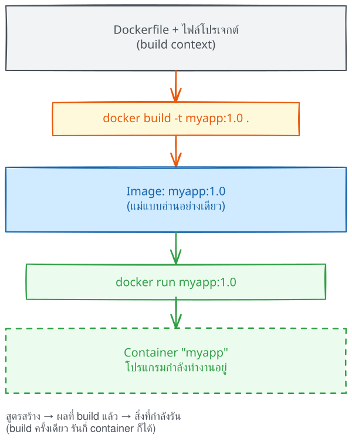
docker build →
Image → docker run → Container
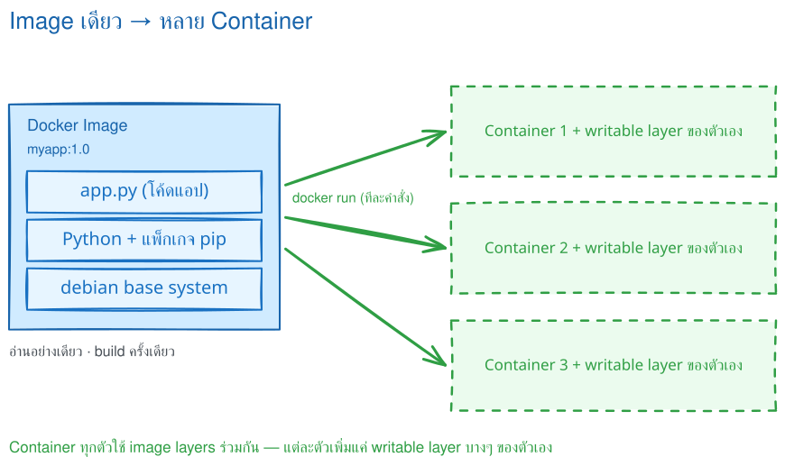
จะได้อะไรจากตอนนี้: อ่าน Dockerfile ของ Flask 8 บรรทัดจากบนลงล่าง และตอบได้ว่าแต่ละบรรทัดจำเป็นต่อการสร้างหรือเริ่มแอปอย่างไร
ตัวอย่างนี้เป็น Flask app ขนาดเล็ก แต่รูปแบบเดียวกันใช้ได้กับแอปจริงจำนวนมาก
ก่อนอ่านสูตร ดูก่อนว่าในครัวมีอะไร:
flask-project/ ├── Dockerfile ← สูตรที่ใช้ COPY ไฟล์เหล่านี้ ├── .dockerignore ← ตัดไฟล์ที่ไม่ควรส่งเข้า build context ├── requirements.txt ← COPY ก่อนเพื่อใช้ cache └── app.py ← COPY เข้า /app เพื่อให้ CMD เริ่มแอป
FROM python:3.12-slim WORKDIR /app COPY requirements.txt . RUN pip install --no-cache-dir -r requirements.txt COPY app.py . ENV APP_VERSION=1.0 EXPOSE 5000 CMD ["python", "app.py"]

ไฟล์นี้มี 8 บรรทัด แต่ใช้คำสั่งจริงแค่ 7 ตัว (COPY ถูกใช้ 2 ครั้ง) ตารางนี้ไล่ทีละบรรทัดว่าทำอะไร และมีอะไรที่คนมักพลาด
| บรรทัด | คำสั่งในไฟล์นี้ | ทำหน้าที่อะไร | ข้อควรรู้ / ที่มักพลาด |
|---|---|---|---|
| 1 | FROM python:3.12-slim | เลือกจุดตั้งต้นที่มี Python พร้อมใช้งาน จึงไม่ต้องติดตั้งระบบภาษาเองตั้งแต่ศูนย์ | ระบุ tag ให้ชัดเจนเสมอ เช่น python:3.12-slim อย่าใช้ latest ลอยๆทุก Dockerfile ต้องขึ้นต้นด้วย FROM เป็นบรรทัดแรก |
| 2 | WORKDIR /app | กำหนด "โต๊ะทำงาน" ใน image ให้คำสั่งถัดไปอ้างพาธเดียวกันและอ่านง่าย | คำสั่งถัดไปอย่าง COPY, RUN, CMD ใช้ตำแหน่งนี้เป็นจุดอ้างอิงถ้าโฟลเดอร์ยังไม่มี Docker สร้างให้เอง |
| 3 | COPY requirements.txt . | นำรายการแพ็กเกจเข้ามาก่อน เพราะบรรทัดถัดไปต้องใช้ไฟล์นี้เป็นข้อมูลในการติดตั้ง | คัดลอกเฉพาะสิ่งจำเป็น และอย่าลืมทำ .dockerignore กันไฟล์ขยะหลุดเข้า image |
| 4 | RUN pip install --no-cache-dir -r requirements.txt | ติดตั้งแพ็กเกจในช่วง build ผลที่ติดตั้งแล้วจึงถูกอบติดไปกับ image | ผลลัพธ์ของ RUN ถูกบันทึกลง image เป็น layerรันตอน build เท่านั้น ไม่ได้รันตอน docker run |
| 5 | COPY app.py . | นำโค้ดแอปเข้ามาหลังติดตั้งแพ็กเกจเสร็จแล้ว | ลำดับนี้ตั้งใจ — โค้ดแอปแก้บ่อยกว่ารายการแพ็กเกจ วางทีหลังจึงใช้ cache ได้คุ้มกว่า (เหตุผลเต็มอยู่ในตอนที่ 5) |
| 6 | ENV APP_VERSION=1.0 | ตั้งค่าตัวแปรสภาพแวดล้อมเริ่มต้นที่แอปอ่านได้ตอนทำงาน | เปลี่ยนค่าตอน run ได้ด้วย -eห้ามฝัง secret (รหัสผ่าน/ API key) ไว้ใน ENV เพราะติดไปกับ image |
| 7 | EXPOSE 5000 | บันทึกไว้ว่าแอปตั้งใจฟังพอร์ต 5000 | ไม่ได้เปิดพอร์ตจริง — เป็นแค่เอกสารกำกับ image การเปิดทางจากเครื่องเราเข้า container ต้องใช้ docker run -p |
| 8 | CMD ["python", "app.py"] | ระบุคำสั่งเริ่มต้นที่จะทำงานเมื่อ container ถูกสร้างขึ้นมา | ควรเขียนแบบ exec form ["python","app.py"] เพื่อแยกชื่อโปรแกรมกับ argument ให้ชัดผู้ใช้ override ได้ด้วยการพิมพ์คำสั่งต่อท้ายชื่อ image ตอน docker run |
7 คำสั่งข้างบนพอสำหรับไฟล์แรกแล้ว แต่มีอีก 2 ตัวที่ต้องรู้จักไว้ เพราะหน้าตาคล้ายกับคำสั่งที่เพิ่งอ่านไปจนสับสนกันบ่อย ตอนนี้แค่จำไว้ว่าต่างกันตรงไหน ยังไม่ต้องใช้
| คำสั่ง | คล้ายกับตัวไหน | ต่างกันตรงไหน | เรียนเต็มๆ ตอนไหน |
|---|---|---|---|
ENTRYPOINT | CMD (บรรทัดที่ 8) | ทั้งคู่บอกว่า container เริ่มทำงานแล้วรันอะไร แต่CMD = ค่าเริ่มต้น ผู้ใช้พิมพ์คำสั่งต่อท้ายชื่อ image เพื่อแทนที่ได้ทั้งหมดENTRYPOINT = ตัวโปรแกรมหลักที่ยึดไว้ สิ่งที่ผู้ใช้พิมพ์มักถูกต่อท้ายเป็น argument แทนเหมาะเมื่ออยากให้ container ทำตัวเหมือนโปรแกรมหนึ่งตัว | ตอนที่ 6 — ทดลองเทียบ RUN vs CMD vs ENTRYPOINT ให้เห็นผลจริง |
ARG | ENV (บรรทัดที่ 6) | ทั้งคู่คือการตั้งค่าตัวแปร แต่คนละช่วงเวลาENV = อยู่ตอน run แอปอ่านค่าได้ และติดไปกับ imageARG = มีเฉพาะตอน build เท่านั้น ส่งค่าด้วย --build-arg พอ build เสร็จก็หายไป แอปอ่านไม่เห็นถ้าอยากให้ค่าอยู่ต่อ ต้องคัดลอกไปใส่ ENV อีกที | ตอนที่ 7 — เทียบ ARG กับ ENV |
FROM, WORKDIR, COPY, RUN, ENV, EXPOSE และ CMD เท่านี้เขียน Dockerfile ใช้งานได้จริงแล้ว ที่เหลือค่อยเก็บระหว่างทางCMD image ยัง build
สำเร็จได้หรือไม่ แล้ว container
จะรู้ได้อย่างไรว่าควรเริ่มโปรแกรมอะไร?
จะได้อะไรจากตอนนี้: สร้าง image ที่มีชื่อ สร้าง container ตรวจสถานะ และคืนพื้นที่อย่างระมัดระวัง
build → run → ตรวจสถานะ → cleanup แต่ละช่วงใช้ผลลัพธ์จากช่วงก่อนหน้า จึงควรเรียนตามลำดับdocker buildคำสั่งนี้อ่าน Dockerfile แล้วสร้าง image จากไฟล์ที่อยู่ใน build context โดยมีรูปแบบหลักดังนี้
docker build [OPTIONS] PATH | URL | -
| หมายถึง “เลือกอย่างใดอย่างหนึ่ง” ระหว่าง
path, URL หรือ - และค่าที่เลือกต้องอยู่ท้ายคำสั่งเสมอ
docker build เริ่มกระบวนการสร้าง image
ส่วนที่กำหนดเพิ่ม เช่น -t, -f,
--build-arg หรือ --target
อาร์กิวเมนต์สุดท้าย เช่น . หรือ ./app
เป็นไฟล์ที่ Docker มีสิทธินำไปใช้ระหว่าง build
docker build .
Docker ใช้ ./Dockerfile โดยอัตโนมัติ และ
. คือ build context
docker build -t myapp:1.0 .
-t ใช้รูปแบบ
[registry/]repository[:tag]
docker build -f Dockerfile.prod -t myapp:1.0 .
-f เลือกไฟล์ Dockerfile ส่วน .
ยังเป็น build context
docker build -t myapp:1.0 -t myapp:latest .
ระบุ -t ซ้ำได้ เหมาะกับ version และ
latest
docker build --build-arg APP_ENV=production -t myapp:1.0 .
Dockerfile ต้องประกาศ ARG APP_ENV
ก่อนจึงจะอ่านค่านี้ได้
docker build --target test -t myapp:test .
--target test สร้างถึง stage ที่เขียนว่า
FROM ... AS test
| Option | ใช้เมื่อ | ตัวอย่าง |
|---|---|---|
--no-cache |
ต้องการ build ทุก layer ใหม่โดยไม่ใช้ cache | docker build --no-cache -t myapp:1.0 . |
--pull |
ตรวจและดึง base image รุ่นใหม่กว่าก่อน build | docker build --pull -t myapp:1.0 . |
--platform |
ระบุ platform เป้าหมายเมื่อ builder รองรับ | docker build --platform linux/amd64 -t myapp:1.0 . |
--progress=plain |
แสดง log แบบข้อความละเอียดเพื่อช่วยตรวจปัญหา | docker build --progress=plain -t myapp:1.0 . |
--build-arg เพราะค่าอาจปรากฏในประวัติของ image
และ --no-cache ไม่ได้ดึง base image ใหม่โดยอัตโนมัติ
หากต้องการทั้งสองอย่างให้ใช้ --pull --no-cache
เปิด terminal ที่โฟลเดอร์เดียวกับ Dockerfile แล้ว build image:
docker build -t myapp:1.0 . # -t = ชื่อ:tag ของ image # . = build context ที่ส่งให้ Docker
จากนั้นสร้าง container และ map พอร์ต:
docker run -d --name myapp -p 8081:5000 myapp:1.0 # host:container = 8081:5000 curl http://localhost:8081
docker image ls แสดง repository,
tag, image ID, เวลาที่สร้าง และขนาด
docker ps; เติม
-a เพื่อรวม container ที่หยุดแล้ว
docker logs -f myapp โดย
-f หมายถึงติดตาม log ต่อเนื่อง
docker exec -it myapp sh เปิด
shell ใน container ที่กำลังทำงาน
docker rm -f myapp; image
ยังอยู่และนำมาสร้าง container ใหม่ได้
| ส่วนของคำสั่ง | ความหมาย |
|---|---|
-d |
Detached mode ให้ container ทำงานเบื้องหลังและคืน prompt ให้ terminal |
--name myapp |
ตั้งชื่อที่จำง่าย ใช้แทน container ID ในคำสั่ง logs, exec, stop และ rm |
-p 8081:5000 |
ส่ง traffic จากพอร์ต 8081 ของ host ไปพอร์ต 5000 ใน container
แอปข้างในต้องฟังที่ 0.0.0.0:5000
|
-e KEY=value |
ส่ง environment variable เข้า container ตอนเริ่มทำงาน
โดยทับค่า default จาก ENV ได้
|
--rm |
ลบ container อัตโนมัติเมื่อหยุด เหมาะกับการทดลอง แต่ไม่เหมาะเมื่ออยากเก็บ container ไว้ตรวจภายหลัง |
LAB นี้ใช้ไฟล์จากตอนที่ 3 และแยกพอร์ตเป็น 3 ชั้น: เครื่องผู้เรียน
8088 → DevTools server 8081 → Flask
container 5000 จึงไม่ชนกับ LAB ที่ใช้พอร์ตอื่น
Docker — รันบนเครื่องผู้เรียน
# ลบ server เดิมถ้ามี แล้วสร้าง DevTools server docker rm -f devtools-dockerfile-media 2>/dev/null docker run -dit --name devtools-dockerfile-media --privileged \ -p 2224:22 -p 8088:8081 tuchsanai/devtools:2569_1
SSH — รันบนเครื่องผู้เรียนหลัง server พร้อมทำงาน
ssh root@localhost -p 2224
เมื่อ SSH ถามรหัสผ่าน ให้ใส่รหัสผ่าน LAB ตามที่ผู้สอนกำหนด:
<LAB_PASSWORD>
<YOUR_NAME>,
<YOUR_EMAIL> และ
<YOUR_TOKEN> เสมอ
Docker — รันหลัง SSH เข้า DevTools server
# cd ไปยังโฟลเดอร์ที่มี Dockerfile ก่อน docker build -t dockerfile-lab:1.0 . docker run -d --name dockerfile-lab-web -p 8081:5000 dockerfile-lab:1.0
HTTP — ตรวจว่า Flask ตอบสนองจากภายใน DevTools server
curl -i http://localhost:8081/
Docker — ตรวจ metadata ของ image
docker image inspect dockerfile-lab:1.0
# แก้เฉพาะ app.py แล้ว build รอบที่สอง
#6 [2/5] WORKDIR /app CACHED
#7 [3/5] COPY requirements.txt . CACHED
#8 [4/5] RUN pip install ... CACHED
#9 [5/5] COPY app.py . DONE
HTTP 200
"Cmd": ["python", "app.py"]
"ExposedPorts": {"5000/tcp": {}}
ผลนี้ยืนยัน 3 เรื่องพร้อมกัน: dependency layers ถูก cache, แอปตอบ HTTP 200 และ metadata ใน image ตรงกับ Dockerfile
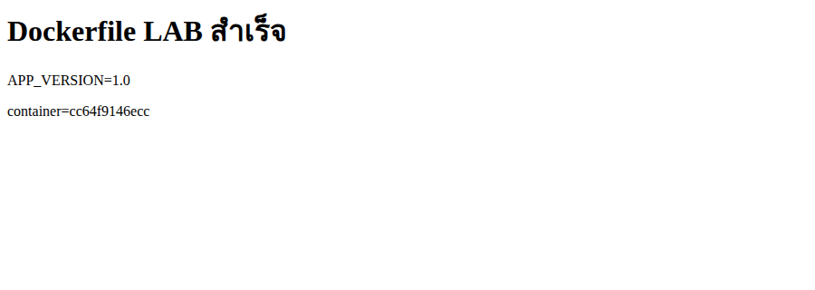
Docker — รันภายใน DevTools server
# ลบ container ของ Flask app docker rm -f dockerfile-lab-web
Shell — ออกจาก DevTools server
exit
Docker — กลับมารันบนเครื่องผู้เรียน
# ลบ DevTools server แล้วตรวจว่าไม่มี container ค้าง docker rm -f devtools-dockerfile-media docker ps -a --filter "name=^devtools-"
HTTP 200, ค่า APP_VERSION=1.0 ปรากฏ
และคำสั่งตรวจสุดท้ายไม่พบ container ชื่อ
devtools-dockerfile-media
ตารางทบทวนในตอนที่ 1 รวบรวมคำสั่ง ps, logs,
exec, stop และ rm แล้ว
ส่วนนี้จัดคำสั่งเดิมให้เป็นลำดับตรวจปัญหาหลัง build
และเติมคำสั่งจากเอกสาร PDF ที่ยังขาด
docker image ls
เป็นรูปแบบจัดกลุ่มคำสั่งของ docker images
ใช้ตรวจชื่อ, tag, image ID และขนาด
docker ps -a
ดูคอลัมน์ STATUS และชื่อ container ก่อนใช้คำสั่งถัดไป
docker logs dockerfile-lab-web
ถ้าต้องการติดตาม log ใหม่แบบต่อเนื่องจึงเพิ่ม -f
และกด Ctrl+C เพื่อหยุดติดตาม
docker exec -it dockerfile-lab-web sh
ใช้ได้เมื่อ container ยังรันอยู่ และ image มีโปรแกรม
sh
docker image inspect dockerfile-lab:1.0
ใช้ดูค่าใน image เช่น Config.Cmd,
Config.Env, exposed ports และ layers
docker container inspect dockerfile-lab-web
ใช้ดูสถานะจริง, mounts, port bindings และ network settings ของ container ที่สร้างแล้ว
docker inspect?
คำสั่งแบบสั้นใช้ได้ แต่การเขียน docker image inspect
หรือ docker container inspect ทำให้ผู้เรียนเห็นชัดว่า
กำลังตรวจ object ชนิดใดและลดความสับสนเมื่อชื่อซ้ำกัน
docker system df
คำสั่งนี้อ่านอย่างเดียว แสดงพื้นที่ของ images, containers, local volumes และ build cache รวมถึงส่วนที่ reclaim ได้
| คำสั่ง Cleanup | ลบอะไร | ไม่ลบอะไร / สิ่งที่ต้องรู้ |
|---|---|---|
docker container prune |
container ทุกตัวที่หยุดอยู่ | ไม่ลบ container ที่กำลังรัน และไม่ลบ volume; ต้องจัดการ volume แยกต่างหาก |
docker image prune |
dangling images ที่ไม่มี tag ตามค่าเริ่มต้น | -a ขยายขอบเขตเป็น image ที่ไม่มี container อ้างถึง จึงต้องตรวจให้ดีก่อนใช้ |
docker builder prune |
build cache ที่ไม่ใช้งาน | ไม่ใช่การลบ image แต่ build ครั้งถัดไปอาจช้าลงเพราะต้องสร้าง cache ใหม่ |
docker container prune
docker image prune
docker builder prune
-f ตอนเรียน: ให้ Docker แสดงรายการเตือน
และถามยืนยันก่อน คำสั่ง prune มีขอบเขตกว้างกว่า
docker rm ชื่อ หรือ docker image rm ชื่อ:tag
ซึ่งระบุเป้าหมายชัดเจน
จะได้อะไรจากตอนนี้: เห็นความสัมพันธ์ระหว่างลำดับคำสั่งกับ layer cache และพิสูจน์ด้วย log จริงว่าขั้นติดตั้งแพ็กเกจถูกนำกลับมาใช้ได้
Docker build Dockerfile จากบนลงล่าง และเก็บผลแต่ละขั้นเป็น layer หากขั้นใดหรือไฟล์ที่มันอ้างถึงเปลี่ยน layer นั้นและทุก layer ถัดลงไปจะต้อง build ใหม่

COPY requirements.txt . RUN pip install -r requirements.txt COPY . .
แก้โค้ดแอปแล้ว dependency layer ยังใช้ cache ได้
COPY . . RUN pip install -r requirements.txt
แก้ไฟล์ใดก็ได้ในโปรเจกต์ อาจทำให้ติดตั้ง dependency ใหม่ทั้งหมด
app.py และ build อีกครั้ง; ใน log ควรเห็น
CACHED ที่ขั้นติดตั้งแพ็กเกจ
FROMจะได้อะไรจากตอนนี้: ตอบได้ว่าคำสั่งใดทำงานตอน build คำสั่งใดทำงานตอน run และสิ่งที่พิมพ์ต่อท้ายชื่อ image ตอน docker run ไปแทนที่หรือไปต่อท้ายอะไร ผ่านการทดลองจริง 4 ชุด
Dockerfile มีคำสั่งสองกลุ่มตามเส้นเวลา — กลุ่มที่ทำงาน "ตอน build"
(RUN บันทึกผลลง image) กับกลุ่มที่ทำงาน "ตอนเริ่ม
container" (CMD, ENTRYPOINT)
ครั้งที่ 1 เราเคย "ต่อท้ายคำสั่ง" หลังชื่อ image แล้ว container
ทำตามนั้น — ตอนนี้จะได้เห็นกลไกว่ามันคือการแทนที่ CMD
ส่วน Dockerfile ของ Flask ในตอนที่ 3 ปิดท้ายด้วย
CMD ["python", "app.py"]; ตอนนี้จะเข้าใจว่าบรรทัดนั้น
ทำงานเมื่อไรและเปลี่ยนได้อย่างไร
-f เลือกไฟล์ (ทบทวนจากตอนที่
4) และใช้ base image alpine:3.20 ที่เล็กและเริ่มเร็ว
cmd-lab/ ├── Dockerfile.run ← 6.1 ทดลอง RUN ├── Dockerfile.cmd ← 6.2 ทดลอง CMD ├── Dockerfile.entrypoint ← 6.3 ทดลอง ENTRYPOINT └── Dockerfile.both ← 6.4 ทดลอง ENTRYPOINT + CMD
RUN ใช้ติดตั้งโปรแกรม สร้างไฟล์ หรือ compile source
ผลลัพธ์ถูกบันทึกเป็น layer ของ image และไม่ต้องทำซ้ำทุกครั้งที่
container เริ่ม
# Dockerfile.run FROM alpine:3.20 RUN echo "สร้างไฟล์ในขั้น Build" > /message.txt RUN apk add --no-cache curl CMD ["cat", "/message.txt"]
docker build -f Dockerfile.run -t demo-run .
ระหว่าง build จะเห็นขั้น RUN ใน log:
... RUN echo "สร้างไฟล์ในขั้น Build" > /message.txt ... RUN apk add --no-cache curl ... exporting to image ... naming to docker.io/library/demo-run
docker run --rm demo-run docker run --rm demo-run curl --version
สร้างไฟล์ในขั้น Build curl 8.x.x (...) libcurl/8.x.x ...
curl --version แต่
curl ยังใช้ได้เพราะถูกติดตั้งถาวรใน image จาก RUN
CMD กำหนด default command ให้ image
หากผู้ใช้ใส่คำสั่งหลังชื่อ image คำสั่งนั้นจะแทน CMD ทั้งชุด
# Dockerfile.cmd FROM alpine:3.20 CMD ["echo", "ข้อความเริ่มต้นจาก CMD"]
docker build -f Dockerfile.cmd -t demo-cmd . docker run --rm demo-cmd docker run --rm demo-cmd echo "แทนที่ CMD แล้ว"
ข้อความเริ่มต้นจาก CMD แทนที่ CMD แล้ว
| docker run | คำสั่งจริง | เหตุผล |
|---|---|---|
docker run demo-cmd |
echo "ข้อความเริ่มต้นจาก CMD" |
ไม่ได้ส่งคำสั่งใหม่ จึงใช้ CMD |
docker run demo-cmd echo hello |
echo hello |
ค่าหลังชื่อ image แทน CMD ทั้งชุด |
ENTRYPOINT เหมาะเมื่อ image
ทำหน้าที่เป็นโปรแกรมหนึ่งตัว ค่าหลังชื่อ image จะถูกต่อเป็น
arguments แทนที่จะเปลี่ยนโปรแกรมหลัก
# Dockerfile.entrypoint FROM alpine:3.20 ENTRYPOINT ["echo", "ข้อความจาก ENTRYPOINT:"]
docker build -f Dockerfile.entrypoint -t demo-entrypoint . docker run --rm demo-entrypoint docker run --rm demo-entrypoint สวัสดี Docker
ข้อความจาก ENTRYPOINT: ข้อความจาก ENTRYPOINT: สวัสดี Docker
คำสั่งครั้งที่สองถูกประกอบเป็น
echo "ข้อความจาก ENTRYPOINT:" "สวัสดี" "Docker"
--entrypoint เช่น
docker run --rm --entrypoint sh demo-entrypoint -c "echo
เปลี่ยนโปรแกรมหลัก"
ตอนนี้รู้จักทั้งสองตัวแล้ว ภาพนี้เทียบพฤติกรรมเมื่อพิมพ์คำสั่งต่อท้าย
ชื่อ image — CMD ถูก "แทนที่" แต่
ENTRYPOINT ถูก "ต่อท้าย" ซึ่งนำไปสู่การใช้คู่กันใน 6.4
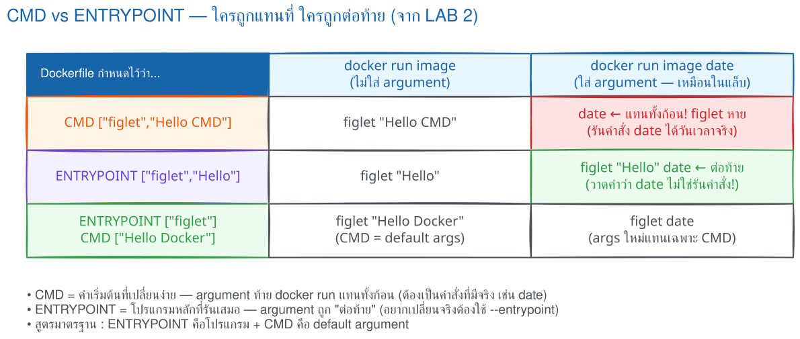
เมื่อใช้ exec form ร่วมกัน ENTRYPOINT เป็นโปรแกรมหลัก ส่วน CMD เป็น arguments เริ่มต้น ผู้ใช้จึงเปลี่ยนเฉพาะ arguments ได้โดยไม่ต้องพิมพ์ชื่อโปรแกรมซ้ำ
# Dockerfile.both FROM alpine:3.20 ENTRYPOINT ["ping"] CMD ["-c", "2", "127.0.0.1"]
docker build -f Dockerfile.both -t demo-both . docker run --rm demo-both docker run --rm demo-both -c 1 localhost
PING 127.0.0.1 (...): 56 data bytes 64 bytes from 127.0.0.1: seq=0 ... 64 bytes from 127.0.0.1: seq=1 ... 2 packets transmitted, 2 packets received, 0% packet loss PING localhost (...): 56 data bytes 64 bytes from ...: seq=0 ... 1 packets transmitted, 1 packet received, 0% packet loss
| การรัน | ENTRYPOINT | CMD/argument | คำสั่งจริง |
|---|---|---|---|
| ไม่ส่ง argument | ping |
-c 2 127.0.0.1 |
ping -c 2 127.0.0.1 |
ส่ง -c 1 localhost |
ping |
CMD เดิมถูกแทน | ping -c 1 localhost |
RUN เกิดตอน build และมีได้หลายบรรทัด ส่วน
CMD/ENTRYPOINT มีผลเมื่อเริ่ม container
โดยค่าล่าสุดเป็นค่าที่ใช้งาน
ENTRYPOINT ["python", "app.py"] CMD ["--port", "5000"]
เมื่อรัน docker run image --port 8000 ค่า CMD
เดิมถูกแทน แต่ ENTRYPOINT ยังอยู่ จึงได้คำสั่งจริงเป็น
python app.py --port 8000
Dockerfile ของ Flask ตอนที่ 3 เลือกใช้ CMD เดี่ยวเพราะต้องการให้ แทนคำสั่งได้ง่ายตอนพัฒนา ส่วน image ที่เป็นเครื่องมือสำเร็จรูปนิยม ENTRYPOINT + CMD แบบนี้
| คำสั่ง | เกิดเมื่อใด | หน้าที่หลัก | เมื่อใส่ค่าหลังชื่อ image |
|---|---|---|---|
RUN |
ตอน build | ติดตั้งหรือสร้างสิ่งที่จะเก็บใน image | ไม่เกี่ยวข้อง |
CMD |
ตอน run | คำสั่งหรือ argument เริ่มต้น | ถูกแทนที่ |
ENTRYPOINT |
ตอน run | โปรแกรมหลักของ container | ค่าถูกต่อเป็น argument |
ENTRYPOINT + CMD |
ตอน run | โปรแกรมหลัก + argument เริ่มต้น | แทน CMD แต่คง ENTRYPOINT |
ENTRYPOINT/CMD
CMD ["python", "app.py"] ถ้าเปลี่ยนเป็น
ENTRYPOINT ["python", "app.py"] แล้วเรารัน
docker run -it image sh ผลจะต่างจากเดิมอย่างไร และแบบไหน
สะดวกกว่าตอนต้องเข้าไป debug?
จะได้อะไรจากตอนนี้: แยกค่า default ใน image ออกจากค่าที่ส่งตอน run และใช้ ENV, -e, --env-file ได้อย่างปลอดภัย
แอปเดียวกันรันได้หลายสภาพแวดล้อม เช่น dev/prod โดยไม่แก้โค้ดและไม่ต้อง build image ใหม่ ค่าที่ต่างกันคือ config เช่น พอร์ต, database host และโหมด debug
ค่า default ฝังใน image
docker run -eทับค่า default สำหรับการรันครั้งนั้น
--env-file .envโหลดหลายค่าแบบ KEY=value
-e KEY=value ชนะ ENV ใน imageDockerfile ของ Flask มี ENV APP_VERSION=1.0 เมื่อต้องการทับค่าตอน run:
docker run -d --name myapp -e APP_VERSION=2.0 -p 8081:5000 myapp:1.0 docker exec myapp env
แอปจะเห็น APP_VERSION=2.0; Python อ่านค่าได้ด้วย os.environ.get("APP_VERSION")
APP_VERSION=2.0 DEBUG=false DATABASE_HOST=redis
docker run --env-file .env --name myapp -p 8081:5000 myapp:1.0.env ใน .dockerignore และเก็บ secret ด้วยกลไกตอน deploy
ARG และ ENV หน้าตาคล้ายกัน
แต่มีอายุคนละช่วง: ARG มีไว้ส่งค่าระหว่างสร้าง image ส่วน ENV
เป็นค่าเริ่มต้นที่ติดไปกับ container เพื่อให้แอปอ่านตอนรัน
| ประเด็น | ARG | ENV |
|---|---|---|
| มีผลช่วงไหน | เฉพาะ build | build และ run |
| วิธีตั้งค่า | --build-arg |
ENV ใน Dockerfile หรือ -e ตอน
run
|
| ใครอ่านได้ | คำสั่ง RUN ระหว่าง build |
คำสั่ง RUN และแอปใน container ตอนรัน |
| ติดใน image history | เห็นได้ จึงห้ามใส่ secret | เห็นได้ จึงห้ามใส่ secret |
FROM alpine:3.20 ARG APP_VERSION=dev ARG BUILD_TOOL=manual ENV APP_VERSION=$APP_VERSION RUN echo "build เห็น: APP_VERSION=$APP_VERSION BUILD_TOOL=$BUILD_TOOL" CMD ["sh", "-c", "echo run เห็น: APP_VERSION=$APP_VERSION BUILD_TOOL=$BUILD_TOOL"]
--progress=plain ทำให้ log ของ build แสดงผลลัพธ์ echo จาก RUN เป็นข้อความธรรมดา จึงใช้ดูผลการทดลองนี้ได้
docker build --progress=plain -f Dockerfile.args -t demo-args . docker run --rm demo-args
# RUN echo "build เห็น: APP_VERSION=dev BUILD_TOOL=manual" build เห็น: APP_VERSION=dev BUILD_TOOL=manual run เห็น: APP_VERSION=dev BUILD_TOOL=
ARG BUILD_TOOL ใช้ได้ใน
RUN แต่ไม่ได้ถูกคัดลอกไป ENV จึงหายไปเมื่อ container
เริ่ม
docker build --build-arg APP_VERSION=2.5 -f Dockerfile.args -t demo-args:2.5 . docker run --rm demo-args:2.5
# RUN echo "build เห็น: APP_VERSION=2.5 BUILD_TOOL=manual" build เห็น: APP_VERSION=2.5 BUILD_TOOL=manual run เห็น: APP_VERSION=2.5 BUILD_TOOL=
docker run --rm -e APP_VERSION=override demo-args:2.5
run เห็น: APP_VERSION=override BUILD_TOOL=
ไทม์ไลน์: --build-arg ส่งค่าเข้า
ARG ระหว่าง build; บรรทัด
ENV APP_VERSION=$APP_VERSION
คัดลอกเฉพาะค่านี้เป็นค่าเริ่มต้นใน image; จากนั้น container รับ
ENV และ -e สามารถทับได้. ARG ที่ไม่ถูกคัดลอกไป ENV
ตายเมื่อ build จบ
ARG ALPINE_VERSION=3.20 ก่อน
FROM alpine:$ALPINE_VERSION ต้องประกาศ
ARG ALPINE_VERSION ซ้ำหลัง
FROM หากจะใช้ค่านั้นในคำสั่งของ stage นั้น
ก่อนตรวจผล docker history แสดงว่าแต่ละ layer ถูกสร้างด้วยคำสั่งอะไร
docker history demo-args:2.5 | head
IMAGE CREATED BY <missing> RUN |2 APP_VERSION=2.5 BUILD_TOOL=manual /bin/sh -c echo ... <missing> ENV APP_VERSION=2.5 <missing> ARG BUILD_TOOL=manual <missing> ARG APP_VERSION=2.5
ARG = ค่าที่ใช้เฉพาะตอน
build เช่น เวอร์ชันหรือทางเลือก build; ENV =
configuration ที่แอปต้องอ่านตอนรัน
ENV ใน Dockerfile แม้ส่งด้วย -e ได้?จะได้อะไรจากตอนนี้: ตั้งชื่อ image ส่งขึ้น registry อย่างปลอดภัย และ pull กลับมารัน
เมื่อ image รันบนเครื่องเราได้แล้ว ขั้นต่อไปคือกำหนดชื่อที่บอก “จะส่งไป registry ใด อยู่ namespace ไหน และเป็นรุ่นอะไร” จากนั้น push เพื่อให้เครื่องอื่น pull image เดียวกันไปสร้าง container ได้
รูปจริงชุดนี้มี 7 ขั้นตอนต่อเนื่อง ตั้งแต่เข้าสู่ Docker Hub
จนได้ Personal Access Token (PAT) สำหรับยืนยันตัวตนของ Docker CLI
ก่อน tag และ push ข้อมูลบัญชี อีเมล
namespace และ token ถูกปิดทับในสำเนาที่ใช้สอน
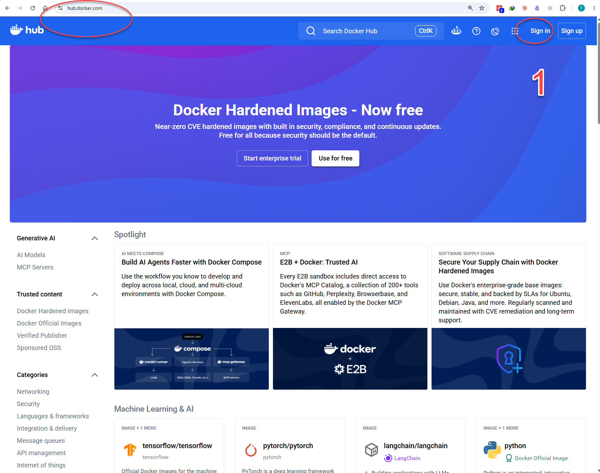
เข้า hub.docker.com แล้วตรวจ domain ใน address bar
ก่อนกด Sign in มุมขวาบน เพื่อลดความเสี่ยงกรอกข้อมูลในเว็บปลอม
หากยังไม่มีบัญชีให้เลือก Sign up ก่อน
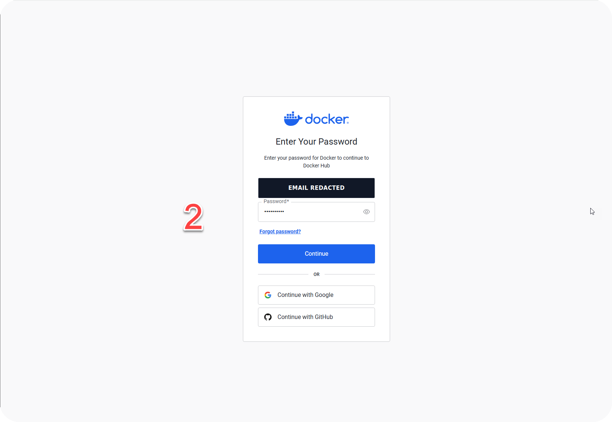
กรอก password หรือใช้ผู้ให้บริการที่ผูกไว้แล้วกด Continue
นี่คือการ login หน้าเว็บเพื่อจัดการบัญชี ยังไม่ใช่
docker login ที่ใช้ให้ CLI push image
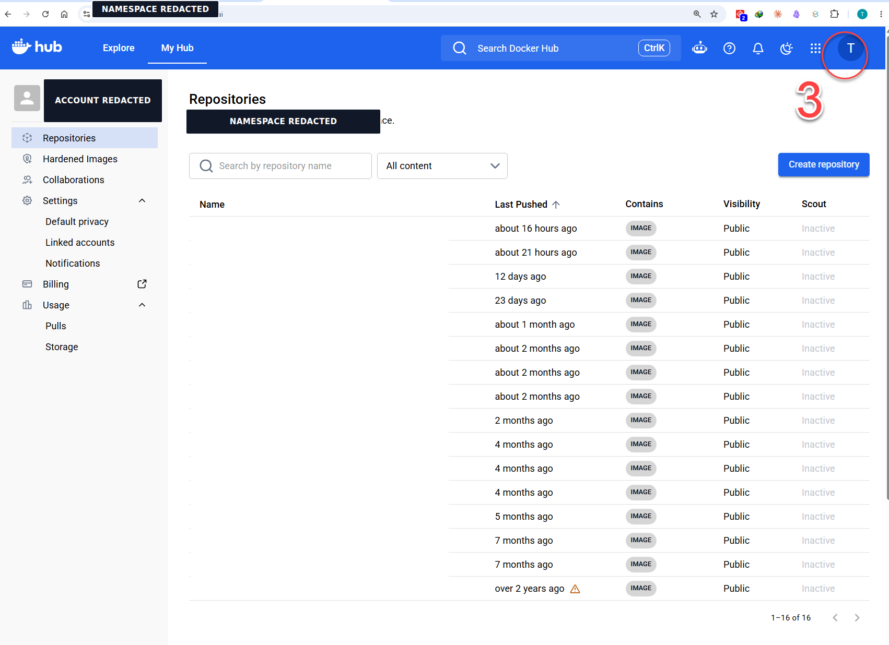
หลัง login จะเข้าสู่หน้า My Hub → Repositories ให้คลิก avatar ที่วงกลมสีแดงบริเวณมุมขวาบน เพื่อเปิดเมนูของบัญชี แล้วทำขั้นตอน 4 ต่อไป
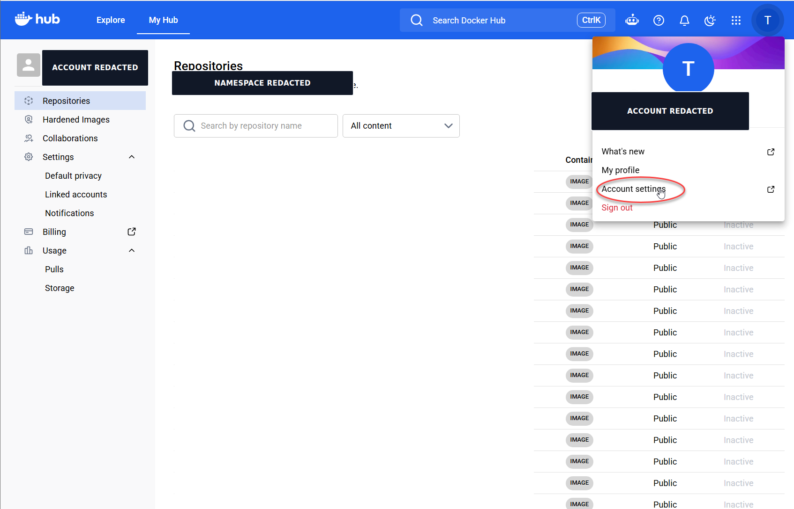
คลิก avatar มุมขวาบน แล้วเลือก Account settings เพื่อจัดการข้อมูลความปลอดภัยของบัญชี เมนูนี้แยกจาก Settings ในหน้า repository ซึ่งใช้ตั้งค่า repository ไม่ใช่ credential ของ CLI
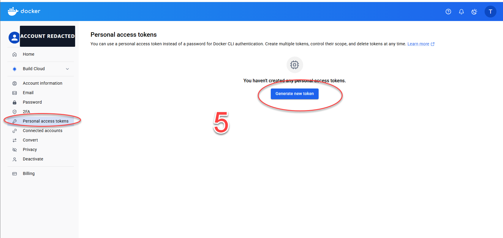
เลือก Personal access tokens จากแถบซ้าย แล้วกด Generate new token ควรสร้าง token แยกตามเครื่องหรืองาน เพื่อ revoke เฉพาะตัวได้โดยไม่กระทบระบบอื่น
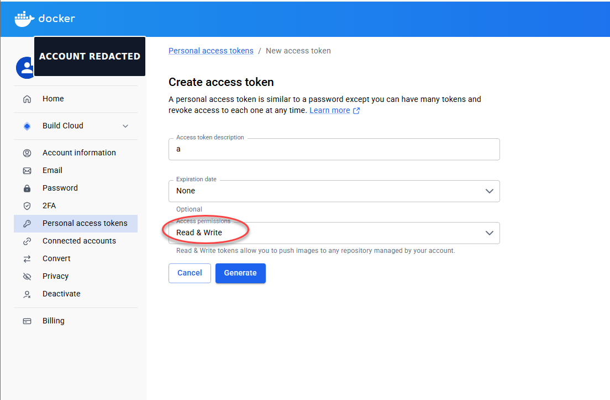
ตั้ง Access token description ให้สื่อถึงผู้ใช้ เครื่อง หรือ LAB; ตั้ง Expiration date ตามอายุงานแทนการเลือกไม่หมดอายุโดยไม่จำเป็น; เลือก Read & Write เพราะ LAB ต้อง pull และ push แล้วกด Generate
ใช้หลัก least privilege: ถ้าต้อง pull อย่างเดียวให้เลือก Read-only และอย่าให้ Delete เมื่อ workflow ไม่ต้องลบ image
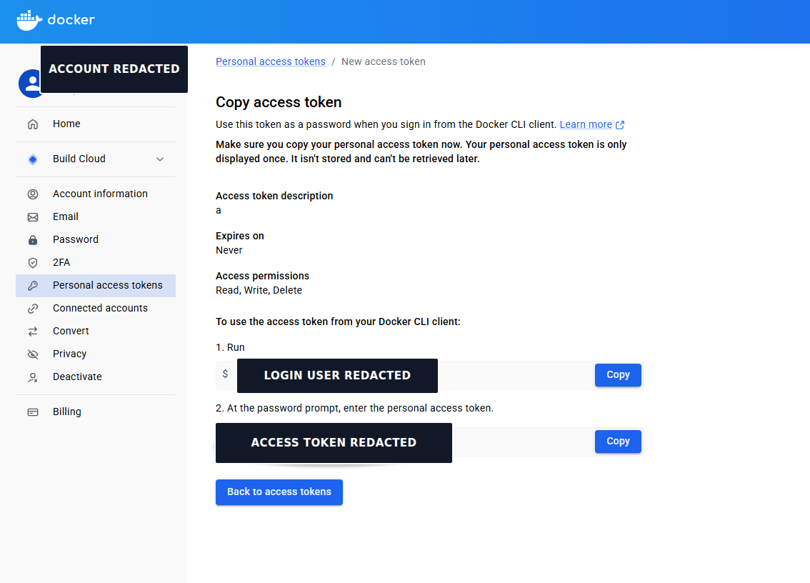
กด Copy และเก็บ token ใน password/secret manager ทันที เพราะออกจากหน้านี้แล้วเรียกดูค่าเดิมไม่ได้ หากทำหายให้ revoke หรือ delete token เดิมและสร้างใหม่
ห้ามวาง token ใน Dockerfile, HTML, source code, Git, screenshot, chat หรือคำสั่งที่บันทึกลง shell history
<DOCKER_USER>, namespace ที่ถูกต้อง และ
<DOCKER_TOKEN> สำหรับ login CLI จากนั้นจึงทำวงจร
build → tag → login → push → pull → run ต่อได้
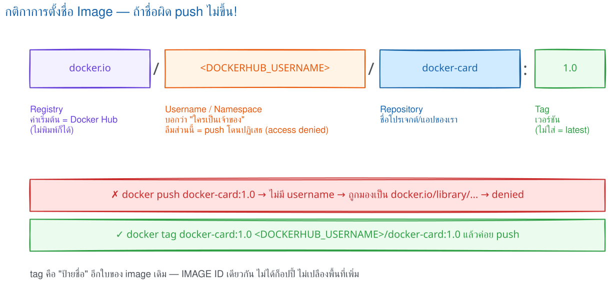
[REGISTRY/][NAMESPACE/]REPOSITORY[:TAG][@DIGEST]
| ส่วน | ตัวอย่าง | หน้าที่ |
|---|---|---|
| Registry | docker.io |
server ที่เก็บ manifest และ layers; ถ้าไม่ระบุ Docker ใช้ Docker Hub เป็นค่าเริ่มต้น |
| Namespace | <DOCKER_USER> |
เจ้าของหรือองค์กรที่มีสิทธิ push repository |
| Repository | dockerfile-lab |
ชื่อชุด image ของแอป |
| Tag | 1.0 |
ชื่ออ้างอิงรุ่นที่เปลี่ยนให้ชี้ image ใหม่ได้ |
| Digest | sha256:… |
รหัสจากเนื้อหา ใช้อ้าง image แบบเจาะจงและไม่เปลี่ยนตาม tag |
docker build -t dockerfile-lab:1.0 .
เพิ่มชื่อใหม่ให้ image เดิม ไม่ได้ copy layers เป็นอีกชุด
ส่ง manifest และเฉพาะ layers ที่ registry ยังไม่มี
เครื่องปลายทางดาวน์โหลด manifest และ layers ที่ขาด
สร้าง container จาก image ที่ดึงกลับมาแล้ว
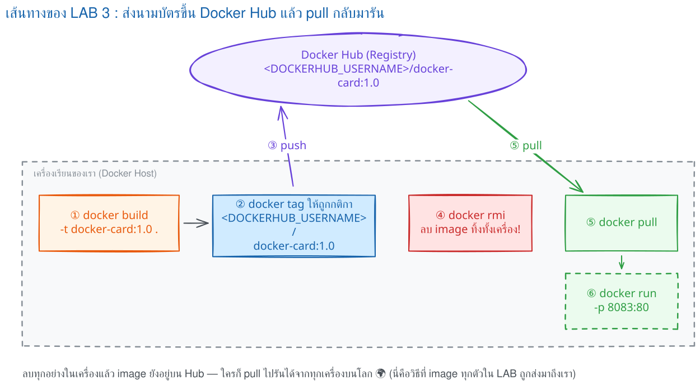
เริ่มจาก login ให้สำเร็จและตรวจว่าเป็นบัญชีที่ถูกต้อง จากนั้นจึงตั้งชื่อ image ให้ตรงกับ namespace ก่อน push
วิธีแนะนำสำหรับเครื่องผู้เรียนคือ device-code login เพราะไม่ต้องพิมพ์ password หรือ token ลงในคำสั่ง
docker login
เปิด URL ที่ CLI แสดง ใส่รหัสแบบใช้ครั้งเดียว แล้วอนุมัติด้วยบัญชี
Docker Hub ที่ต้องการใช้ รอจน CLI แสดง Login Succeeded
Password: ให้วาง token แทน password
docker login --username '<DOCKER_USER>' # Password: วาง <DOCKER_TOKEN> ที่ prompt — ค่าไม่แสดงบนหน้าจอ
ห้ามเขียน token ต่อท้ายคำสั่ง ห้ามเก็บไว้ใน Dockerfile, HTML, source code, Git, screenshot หรือ chat
หลัง login ให้เปิด Docker Hub แล้วกด avatar → My Hub →
Repositories ตรวจว่าเป็นบัญชีหรือองค์กรที่มีสิทธิ push
ชื่อด้านหน้า repository ต้องตรงกับ namespace เช่น
<DOCKER_USER>/dockerfile-lab:1.0
ปุ่ม Create repository ใช้สร้าง repository ล่วงหน้าเมื่อจำเป็น และ visibility เป็นตัวกำหนดว่า image เป็น public หรือ private
docker image inspect dockerfile-lab:1.0
หากคำสั่งนี้หา image ไม่พบ ให้ย้อนกลับไป build
dockerfile-lab:1.0 ให้สำเร็จก่อน
docker tag dockerfile-lab:1.0 <DOCKER_USER>/dockerfile-lab:1.0
ชื่อซ้ายคือ local image ที่มีอยู่ ส่วนชื่อขวาคือชื่อสำหรับ Docker Hub; การ tag เป็นการเพิ่มชื่ออ้างอิง ไม่ได้คัดลอก layers
docker push <DOCKER_USER>/dockerfile-lab:1.0
สำเร็จเมื่อคำสั่งแสดง digest และไม่มีข้อความ
requested access to the resource is denied
ไปที่ My Hub → Repositories → dockerfile-lab → Tags
แล้วตรวจว่ามี tag 1.0 และ digest ตรงกับผลจากการ push
# ลบเฉพาะชื่อที่ผูกกับ Docker Hub เพื่อบังคับให้ pull กลับมาใหม่ docker image rm <DOCKER_USER>/dockerfile-lab:1.0 docker pull <DOCKER_USER>/dockerfile-lab:1.0 docker run --rm -p 8081:5000 <DOCKER_USER>/dockerfile-lab:1.0
docker logout
1.0 และ image ที่ pull กลับมาสามารถ run ได้
latest ไม่ได้แปลว่าใหม่ที่สุดโดยอัตโนมัติ:
มันเป็น tag ธรรมดาที่ผู้ push เปลี่ยนปลายทางได้ งาน deploy
ที่ต้องทำซ้ำอย่างแน่นอนควรใช้ version tag และเมื่อเข้มงวดมากให้ pin
ด้วย digest เช่น image@sha256:…
LAB นี้เปิด Distribution Registry ภายใน DevTools server แล้ว
push/pull ผ่าน localhost:5000 จึงฝึกวงจรได้โดยไม่ใช้
Docker Hub token และไม่สร้าง repository ภายนอก
Docker — รันบนเครื่องผู้เรียน
# ใช้ชื่อและพอร์ตแยกจาก LAB ก่อนหน้า docker rm -f devtools-registry-cycle 2>/dev/null docker run -dit --name devtools-registry-cycle --privileged \ -p 2225:22 -p 5009:5000 tuchsanai/devtools:2569_1
SSH — รันบนเครื่องผู้เรียน
ssh root@localhost -p 2225 # ใส่รหัสผ่าน LAB ตามที่ผู้สอนกำหนด: <LAB_PASSWORD>
Docker — รันภายใน DevTools server
# รันหลัง SSH สำเร็จ docker run -d --name lab-registry -p 5000:5000 registry:2 docker pull alpine:3.22 docker tag alpine:3.22 localhost:5000/workshop/alpine:1.0 docker push localhost:5000/workshop/alpine:1.0 # ลบชื่อ local เพื่อบังคับให้ pull กลับจาก Registry จริง docker image rm localhost:5000/workshop/alpine:1.0 docker pull localhost:5000/workshop/alpine:1.0 docker run --rm localhost:5000/workshop/alpine:1.0 \ sh -c 'echo REGISTRY_CYCLE_OK; cat /etc/alpine-release'
HTTP — รันภายใน DevTools server
# ตรวจ catalog และ tags ผ่าน Registry HTTP API curl http://localhost:5000/v2/_catalog curl http://localhost:5000/v2/workshop/alpine/tags/list
1.0: digest: sha256:7c8cb692… size: 1022
Status: Downloaded newer image for
localhost:5000/workshop/alpine:1.0
REGISTRY_CYCLE_OK
3.22.5
{"repositories":["workshop/alpine"]}
{"name":"workshop/alpine","tags":["1.0"]}
ผลนี้ยืนยันว่า push สำเร็จ, pull หลังลบ local tag สำเร็จ, image ที่ pull มารันได้ และ Registry API พบ tag จริง
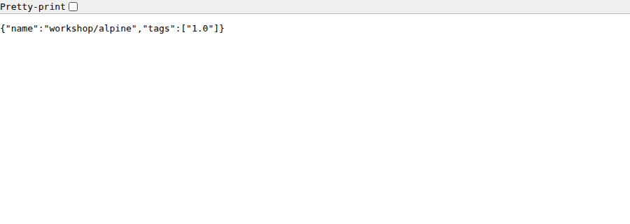
Docker — รันภายใน DevTools server
docker rm -f lab-registry
Shell — ออกจาก DevTools server
exit
Docker — รันบนเครื่องผู้เรียน
# ลบ DevTools server และตรวจว่าไม่มี container ค้างอยู่ docker rm -f devtools-registry-cycle docker ps -a --filter "name=^devtools-"
REGISTRY_CYCLE_OK, API คืน tag
1.0 และหลัง cleanup ไม่เหลือ container
devtools-registry-cycle
localhost ในการทดลองเท่านั้น Registry
ที่ให้เครื่องอื่นเชื่อมต่อควรใช้ TLS, authentication
และการกำหนดสิทธิ ไม่ควรปิดการตรวจความปลอดภัยเพื่อความสะดวก
1.0 ถูก push ซ้ำให้ชี้ image
คนละตัว การ pull ด้วย tag กับการ pull ด้วย digest
จะให้ความแน่นอนต่างกันอย่างไร?
จะได้อะไรจากตอนนี้: ให้ container สื่อสารกันด้วยชื่อแทน IP ที่เปลี่ยนได้
ครั้งที่ 1 เราใช้ -p ให้คนภายนอกเข้าถึง container แต่เมื่อ web ต้องคุยกับ redis ไม่ควรอ้อมออก host
| ชนิด | แนวคิด | ใช้เมื่อ |
|---|---|---|
bridge | network มาตรฐาน | container ทั่วไป |
host | ใช้ stack ของ host | กรณีเฉพาะ |
none | ไม่ต่อ network | ตัดการสื่อสาร |
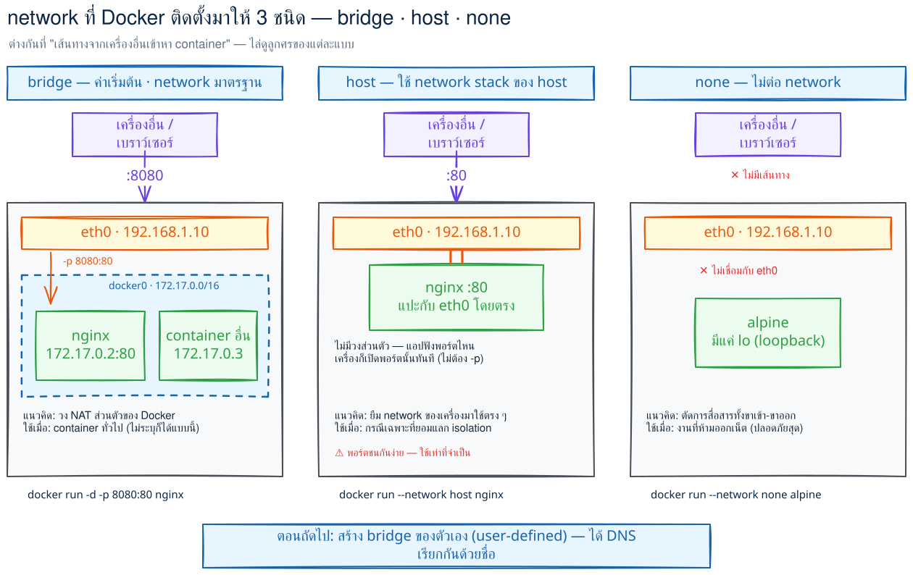
bridge (ค่าเริ่มต้น), host และ nonedocker network create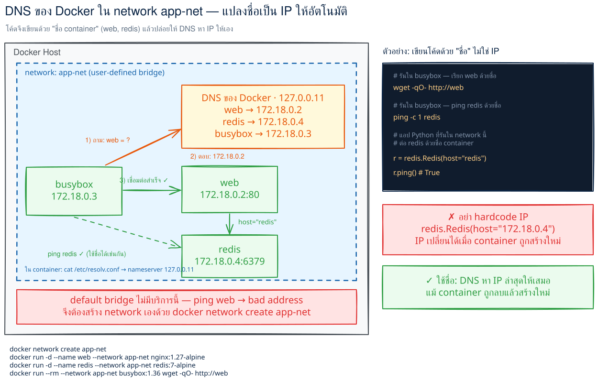
app-net DNS ของ Docker (127.0.0.11) แปลงชื่อ web เป็น IP ให้อัตโนมัติ ส่วน default bridge ไม่มีบริการนี้จากตารางด้านบน เราจะลงมือกับ user-defined bridge เพราะ container ใน network เดียวกัน resolve ชื่อกันได้
docker network ls
docker network create app-net
หากไม่ระบุ driver Docker จะสร้าง network แบบ
bridge ให้โดยอัตโนมัติ
docker run -d --name web --network app-net nginx:1.27-alpine
docker run --rm --network app-net busybox:1.36 wget -qO- http://web
คำว่า web ถูก resolve เป็น IP ของ container
โดย DNS ภายใน Docker ไม่ต้องจำ IP ที่เปลี่ยนได้
docker network inspect app-net docker rm -f web docker network rm app-net
-p redis ออก host ไหม?จะได้อะไรจากตอนนี้: อ่านและเขียน compose.yaml ได้ครบทั้ง service, port, volume, network, environment, healthcheck และวงจรคำสั่งของหลาย container
Docker Compose รวบรวมการตั้งค่าของหลาย service ไว้ในไฟล์ YAML เดียว เพื่อสั่งขึ้น ลง และดูแลระบบทั้งชุดได้พร้อมกัน
Compose สร้าง network ของ project อัตโนมัติตามตอนที่ 9 และตั้งค่า environment ได้ตามตอนที่ 7
หนึ่งชุดระบบจาก compose.yaml หนึ่งไฟล์ ชื่อ project มาจากชื่อโฟลเดอร์ และกลายเป็น prefix ของชื่อ container, network และ volume ทั้งหมด
นิยาม “แบบพิมพ์” ของ container หนึ่งชนิด เช่น web, redis; หนึ่ง service สร้างเป็น container ได้ และสเกลได้มากกว่าหนึ่ง
ไฟล์ประกาศแบบ declarative: บอก “สภาพปลายทางที่ต้องการ” แล้ว Compose คำนวณเองว่าต้องสร้าง แก้ หรือลบอะไร จึงรันซ้ำได้ผลเหมือนเดิม
เมื่อระบบมีมากกว่าหนึ่ง container การจำคำสั่งทีละบรรทัดทั้งสร้าง network, ตั้งค่า และเปิดพอร์ตทำซ้ำยากและผิดง่าย ลองดูผลลัพธ์ก่อน–หลังที่เท่ากัน
docker network create myproj_default docker run -d --name web --network myproj_default -p 8081:5000 -e REDIS_HOST=redis dockerfile-lab:compose docker run -d --name redis --network myproj_default redis:7-alpine
services: web: build: . ports: ["8081:5000"] environment: { REDIS_HOST: redis } redis: image: redis:7-alpine
เริ่มจาก 4 key ที่จำเป็นก่อน: services: รวม service, image: หรือ build: เลือกสิ่งที่จะรัน, ports: เปิดทางเข้า และ environment: ส่งค่าตั้งค่าเข้าแอป
services: web: image: myapp:1.0 build: . ports: - "8081:5000" environment: APP_VERSION: "1.0"
services: → ชื่อ service → image:/build:/ports:/environment:; indent สื่อความเป็นลูก
key: value คือ map ส่วน - item คือ list. ค่าที่มี : หรืออาจถูกตีความเป็นตัวเลข/boolean ให้ครอบด้วยเครื่องหมายคำพูด เช่น "8081:5000", "yes", "no" เพื่อไม่ให้ YAML อ่านผิดความหมายตอนนี้มีภาพของไฟล์ขั้นต่ำแล้ว ลองรันระบบจริงก่อน แล้วค่อยแกะ option เพิ่มทีละอย่าง
ใน PDF รุ่นเดิมใช้ไฟล์ docker-compose.yml และคำสั่ง
docker-compose up ปัจจุบันให้ใช้ Compose plugin
รูปแบบ docker compose และนิยมตั้งไฟล์ว่า
compose.yaml
ไฟล์ compose.yaml — วางข้าง Dockerfile
version: "3.8" services: web: build: context: . dockerfile: Dockerfile image: dockerfile-lab:compose ports: - "8081:5000" environment: REDIS_HOST: redis redis: image: redis:7-alpine
version: "3.8" กำหนดรูปแบบ Compose file ตระกูล version 3build.context: . ใช้โฟลเดอร์ปัจจุบันเป็น build contextdockerfile: Dockerfile ระบุไฟล์สูตรของ service webimage ตั้งชื่อผลลัพธ์หลัง Compose buildweb หรือ redisdocker compose ใช้ Compose Specification และอาจแจ้งว่า
top-level version เป็นข้อมูลแบบเก่า แต่ยังอ่านไฟล์
version: "3.8" ได้ ตัวอย่างนี้คง version 3.8
เพื่อให้ตรงกับรูปแบบที่ใช้ในรายวิชา
app.py จาก Flask LAB เดิมโดยยังไม่ได้เพิ่ม Redis
client ตัว Redis จะรันอยู่แต่ web ยังไม่ส่งข้อมูลไปหา Redis
โค้ดแอปต้องอ่าน REDIS_HOST=redis และจัดการ retry เอง
จึงจะเป็นการเชื่อมต่อจริง
docker compose up -d --buildสร้าง image ที่มี build: แล้วรันเบื้องหลัง
docker compose psแสดง service, container, health และ port ของ project นี้
docker compose logs -f webกด Ctrl+C เพื่อหยุดติดตาม โดย container ยังรันต่อ
docker compose exec web shแนวคิดเดียวกับ docker exec แต่ใช้ชื่อ service
docker compose downลบ containers และ network ที่ Compose สร้าง แต่ไม่ลบ named volumes ตามค่าเริ่มต้น
จาก docker compose ps ที่เพิ่งรัน ชื่อ container และ network ไม่ได้เกิดขึ้นสุ่ม ๆ แต่ Compose ตั้งจากชื่อ project และ service ให้เรา
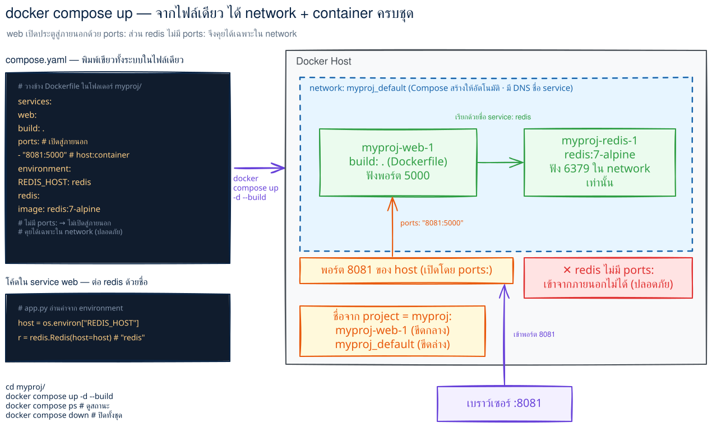
docker compose up อ่าน compose.yaml แล้วสร้าง network + container ทั้งชุดในคำสั่งเดียวmyproj → container ชื่อ myproj-web-1 (ขีดกลาง) แต่ network/volume ชื่อ myproj_default (ขีดล่าง) — เวลาอ่านผล docker ps หรือ docker network ls จะได้ไม่งงCompose สร้าง <project>_default เป็น user-defined bridge ตามตอนที่ 9 ทุก service จึงเรียกกันด้วยชื่อ service ผ่าน DNS ภายใน เช่น web เรียก redis ได้ทันที ไม่ต้องหา IP
ในไฟล์เมื่อครู่เราเขียน "8081:5000" ไปแล้ว ตอนนี้มาดูรูปแบบหลักที่ใช้ได้ports: คือรูปแบบไฟล์ของ docker run -p host:container จากตอนที่ 1 และ 4; พอร์ตซ้ายเป็นของ host พอร์ตขวาเป็นของ container
ports:
- "8081:5000" # host 8081 → container 5000
- "127.0.0.1:8081:5000" # รับเฉพาะจาก localhost
| วิธี | คนภายนอกเข้าถึงได้หรือไม่ | ใช้เมื่อ |
|---|---|---|
ports: | ได้ ผ่าน host port | web หรือ API ที่ผู้ใช้เรียก |
| ไม่ประกาศเลย | ไม่ได้จาก host แต่ service ใน network เดียวกันยังเรียกพอร์ตที่แอปฟังได้ | redis หรือ db ใน network เดียวกัน |
ports: เลย แล้วทำไม web ยังต่อ redis:6379 ได้?เราเพิ่งส่ง REDIS_HOST: redis ใน LAB ไปแล้ว หัวข้อนี้ต่อยอดจาก ENV และ -e ในตอนที่ 7: environment: ส่งค่าเข้า container แบบ map ส่วน env_file: เหมาะกับค่าจำนวนมาก
services: web: environment: APP_ENV: production PORT: "5000" env_file: - .env.app
environment: ชนะ env_file: และทั้งคู่ชนะ ENV ใน Dockerfile (ตรงกับหลักตอนที่ 7).env หรือ .env.app ที่มีรหัสผ่านจริงต้องอยู่ใน .gitignore ตามหลัก Git ของรายวิชาเมื่อครู่เราสั่ง down ไป ถ้า redis เก็บข้อมูลไว้ ข้อมูลจะหายไหม? filesystem ใน container เป็นชั้นชั่วคราว เมื่อสร้างหรือลบ container ใหม่ ข้อมูลที่เขียนไว้ในชั้นนั้นอาจหายไป จึงใช้ volume แยกข้อมูลออกมา
| ชนิด | ตัวอย่าง | ใครจัดการ / เห็นจาก host ไหม | ใช้เมื่อ |
|---|---|---|---|
| bind mount | ./src:/app | ผู้ใช้จัดการ / เห็นเป็นไฟล์จริง | พัฒนา source |
| named volume | dbdata:/var/lib/mysql | Docker จัดการ / ไม่แก้ตรง ๆ | ข้อมูลฐานข้อมูลถาวร |
services: db: volumes: - dbdata:/var/lib/mysql - ./config:/etc/myapp:ro volumes: dbdata:
named volume ต้องประกาศที่ top-level และชื่อจริงมักเป็น <project>_dbdata; suffix :ro ทำให้ mount แบบอ่านอย่างเดียว
docker volume ls docker compose down docker compose down -v
down ปกติไม่ลบ named volume แต่ down -v จะลบ named volume ของ project ด้วย ข้อมูลฐานข้อมูลอาจหายถาวรจาก default network และชื่อ service ในหัวข้อ 10.3 จะประกาศ network เองเมื่อต้องการแยกชั้นการเข้าถึง เช่น frontend กับ backend
services: web: networks: [frontend, backend] db: networks: [backend] networks: frontend: backend: internal: true
แยกชั้นเพื่อให้ service ที่ไม่จำเป็นต้องคุยกันเข้าถึงกันไม่ได้; internal: true ลดการออกสู่ภายนอกจาก network นั้น และชื่อ service คือ hostname ที่ใช้เรียกกัน
ใน LAB เราพบว่า web อาจขึ้นก่อน redis พร้อม — แก้ด้วยอะไร? depends_on แบบ list คุมเพียงลำดับที่ Compose สั่งเริ่ม ไม่ได้แปลว่า database พร้อมรับงาน หากต้องรอจริงให้มี healthcheck และใช้ long form
services: db: image: mysql:8 healthcheck: test: ["CMD", "mysqladmin", "ping", "-h", "localhost"] interval: 10s timeout: 5s retries: 5 start_period: 30s web: depends_on: db: condition: service_healthy restart: unless-stopped
test คือคำสั่งตรวจสุขภาพ; Compose ประเมินซ้ำตาม intervaltimeout, retries, start_period กำหนดเวลารอ จำนวนครั้ง และช่วงผ่อนผันตอนเริ่มcondition: service_healthy รอให้ db healthy ก่อนจึงสร้าง webrestart เลือก no, always, on-failure หรือ unless-stopped ตามนโยบายทุก key ในไฟล์นี้ผ่านตาแล้วในหัวข้อ 10.4–10.8 ไม่มีของใหม่
services: web: build: context: . args: APP_MODE: production ports: - "8081:5000" env_file: .env.app depends_on: redis: condition: service_healthy networks: [frontend, backend] restart: unless-stopped redis: image: redis:7-alpine volumes: [redisdata:/data] networks: [backend] healthcheck: test: ["CMD", "redis-cli", "ping"] interval: 10s timeout: 5s retries: 5 volumes: redisdata: networks: frontend: backend: internal: true
build.context และ build arg ตาม LAB แล้วเปิด "8081:5000" ตามหัวข้อ 10.4env_file แยกค่า runtime ออกจากไฟล์หลักตาม 10.5redisdata ทำให้ข้อมูล Redis อยู่ข้ามการสร้าง container ใหม่ตาม 10.6ไม่ต้องท่อง เปิดดูเมื่อลืม
สิ่งที่ทำด้วย docker run | key ใน compose.yaml | หมายเหตุ |
|---|---|---|
docker build -t ... | build: | Compose build ให้ตอน up --build |
docker run ชื่อ image | image: | ใช้ image สำเร็จรูป หรือเป็นชื่อผลลัพธ์เมื่อมี build: |
-p 8081:5000 | ports: | ความหมาย host:container เหมือนเดิม |
-e KEY=value | environment: | ตามทฤษฎีตอนที่ 7 |
-v | volumes: | ทั้ง bind mount และ named volume |
--network | ไม่ต้องเขียนเอง | Compose สร้าง network ของ project และต่อทุก service ให้อัตโนมัติ (กำหนดเองได้ด้วย networks:) |
--name | Compose ตั้งให้อัตโนมัติ | เป็น <project>-<service>-1 |
| คำสั่ง | ใช้เมื่อ |
|---|---|
docker compose up -d --build | build image ที่ระบุด้วย build: และเริ่มทุก service เบื้องหลัง |
docker compose ps | ดู service, container, health และ port ของ project นี้ |
docker compose logs -f web | ติดตาม log ของ service web |
docker compose exec web sh | รันคำสั่งใน service; แนวคิดเดียวกับ docker exec แต่ใช้ชื่อ service |
docker compose down | ลบ containers และ network ของ project โดยคง named volumes ไว้ |
docker compose down -v | ลบ project พร้อม named volumes |
tab ใช้ไม่ได้ และ port ที่ไม่ครอบ " " อาจถูก YAML ตีความผิด ให้เยื้องด้วย space และเขียน "8081:5000"
แก้ Dockerfile แล้วต้อง docker compose up -d --build; เปลี่ยนเพียง Compose config ใช้ up -d เพื่อให้ Compose reconcile
อย่าฝืนตั้งชื่อ container เองผ่าน container_name — ชื่อจะชนกันเมื่อรันหลายชุดและ scale ไม่ได้ ปล่อยให้ Compose ตั้ง <project>-<service>-N ให้อัตโนมัติ
ตรวจให้แน่ใจก่อนใช้ docker compose down -v เพราะคำสั่งนี้ลบ named volume ด้วย
ไม่ต้อง publish port ของ db หรือ redis หากมีเพียง service ใน project ใช้งาน; ใช้ชื่อ service บน network แทน
ใช้ docker compose (เว้นวรรค) ซึ่งเป็น Compose plugin ปัจจุบัน แทน docker-compose แบบขีดกลาง
docker run หลายบรรทัดไว้ในเอกสารหรือ shell history?
จะได้อะไรจากตอนนี้: แยกขั้น “สร้างชิ้นงาน” ออกจากขั้น “รันชิ้นงาน” แล้วเลือก runtime image ตามชนิดแอปแทนการยัดเครื่องมือทุกอย่างไว้ใน image เดียว
Multi-stage build คือ Dockerfile ที่มี
FROM มากกว่าหนึ่งช่วง แต่ละช่วงเรียกว่า stage เราใช้
stage แรกติดตั้งเครื่องมือหนักและ build งาน แล้วใช้
COPY --from=... คัดลอกเฉพาะผลลัพธ์ที่จำเป็นเข้าสู่
stage สุดท้าย
มี compiler, Maven, Node หรือเครื่องมือ build ครบ จึงอาจใหญ่ แต่มีหน้าที่ชั่วคราวและไม่ใช่ image ที่นำไปรันจริง
เก็บเพียง artifact กับ runtime ที่จำเป็น เช่น ไฟล์ static + Nginx หรือ JAR + JRE ทำให้ image สุดท้ายเล็กและมีสิ่งที่ไม่จำเป็นน้อยลง
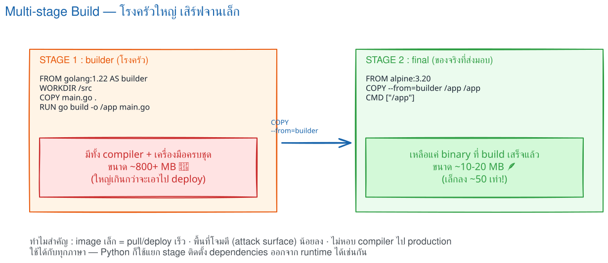
ให้เริ่มจากคำถามว่า “แอปต้อง build ก่อนหรือไม่” และ “ตอนรันต้องมี runtime ภาษาใดอยู่ใน image” ไม่ใช่เลือก image ที่เล็กที่สุดเพียงอย่างเดียว
| ประเภทแอป | สิ่งที่เกิดตอน build | runtime ที่ควรได้ | ตัวอย่างด้านล่าง |
|---|---|---|---|
| Python API | ติดตั้ง pip dependencies | Python + package ที่ต้องใช้ | Flask / FastAPI |
| React SPA | npm run build สร้างไฟล์ static |
Nginx เท่านั้น | React + Nginx |
| Next.js | next build |
Node.js เฉพาะ output ที่ deploy | Next.js standalone |
| Node.js API | ติดตั้ง production dependencies | Node.js | Express |
| Static HTML | ไม่ต้อง compile | Nginx | HTML/CSS/JS |
| Database (PostgreSQL) | ไม่ compile — ใช้ official image + init script | official image ของ postgres | PostgreSQL |
จะได้อะไรจากตอนนี้: เลือกตัวอย่างที่ใกล้กับงานของตนเองและอ่านจากแบบไม่มี build step ไปจนถึง multi-stage สามขั้น โดยยังเห็นโครงสร้างไฟล์ เหตุผล และข้อควรระวังครบ ปิดท้ายด้วย database สำเร็จรูปที่ไม่ต้อง build แอปเอง
ทุกตัวอย่างสมมติว่าไฟล์ Dockerfile อยู่ที่ root ของโปรเจกต์ คัดลอกไปเริ่มต้นได้ แล้วปรับชื่อไฟล์และพอร์ตตามแอปของคุณ
ไม่มี build step: คัดลอกไฟล์เว็บไปยัง document root ของ Nginx ได้ทันที
static-site/
├── Dockerfile
└── public/ ← COPY ./public/ ไปยัง Nginx
├── index.html
├── style.css
└── app.js
FROM nginx:1.27-alpine COPY ./public/ /usr/share/nginx/html/ EXPOSE 80 CMD ["nginx", "-g", "daemon off;"]
docker build -t static-site . docker run --rm -p 8080:80 static-site
./public/ คือแหล่งไฟล์บน host เช่น
index.html, style.css และ
app.js
/usr/share/nginx/html/ คือ document root
เริ่มต้นของ official Nginx image
เหมาะกับ Flask หรือ WSGI app เล็ก ๆ ที่เริ่มด้วย
python app.py. แยก
requirements.txt ก่อนเพื่อใช้ cache.
flask-project/ ├── Dockerfile ← สูตรที่ใช้ COPY ไฟล์เหล่านี้ ├── .dockerignore ← ตัดไฟล์ที่ไม่ควรส่งเข้า build context ├── requirements.txt ← COPY ก่อนเพื่อใช้ cache └── app.py ← COPY เข้า /app เพื่อให้ CMD เริ่มแอป
FROM python:3.12-slim WORKDIR /app ENV PYTHONDONTWRITEBYTECODE=1 PYTHONUNBUFFERED=1 COPY requirements.txt . RUN pip install --no-cache-dir -r requirements.txt COPY . . EXPOSE 5000 CMD ["python", "app.py"]
docker build -t flask-demo:1.0 . docker run --rm -p 5000:5000 flask-demo:1.0
python:3.12-slim มี Python พร้อม Debian ชุดเล็ก
เป็นจุดสมดุลระหว่างขนาดและความเข้ากันได้ของ package
PYTHONDONTWRITEBYTECODE=1 ไม่สร้างไฟล์
.pyc; PYTHONUNBUFFERED=1 ทำให้ log
ออกทันที เหมาะกับ container logs
requirements.txt และติดตั้งก่อน source
เพื่อให้แก้ app.py แล้วไม่ต้องติดตั้ง package ซ้ำ
COPY . . คัดลอกไฟล์ที่ไม่ถูกตัดออกด้วย
.dockerignore ไปยัง /app
0.0.0.0 ไม่ใช่
127.0.0.1 จึงจะรับ traffic จากนอก container ได้
CMD ["gunicorn","-b","0.0.0.0:5000","app:app"]
เหมาะกับ API ที่ไฟล์ main.py มีตัวแปร
app. ใช้ exec form เพื่อส่ง signal หยุดไปยัง Uvicorn
ได้ถูกต้อง
fastapi-project/ ├── Dockerfile ├── .dockerignore ← ตัดไฟล์ที่ไม่ควร COPY เข้า image ├── requirements.txt ← COPY ก่อนเพื่อติดตั้ง dependencies └── main.py ← ต้องมีตัวแปร app สำหรับ main:app
FROM python:3.12-slim WORKDIR /app COPY requirements.txt . RUN pip install --no-cache-dir -r requirements.txt COPY . . EXPOSE 8000 CMD ["uvicorn", "main:app", "--host", "0.0.0.0", "--port", "8000"]
docker build -t fastapi-demo . docker run --rm -p 8000:8000 fastapi-demo
requirements.txt ต้องมีอย่างน้อย
fastapi และ uvicorn[standard]; ส่วน
main:app แปลว่า “นำตัวแปรชื่อ
app จากโมดูล main.py”
--host 0.0.0.0 ให้ server ฟังทุก network
interface ภายใน container
--port 8000 ต้องตรงกับพอร์ตด้านขวาของ
-p 8000:8000
http://localhost:8000/docs เพื่อตรวจ Swagger
UI หลัง container เริ่มทำงาน
--reload ใน production เพราะสร้าง
process เฝ้าดูไฟล์เพิ่มและออกแบบมาสำหรับ development
เพิ่ม --workers 4 ได้ แต่จำนวนที่เหมาะสมขึ้นกับ
CPU และรูปแบบ workload; บน Kubernetes มักเลือกเพิ่มจำนวน
replicas แทนการใส่ worker จำนวนมากใน container เดียว
เริ่มจาก package-lock.json เพื่อให้
npm ci ติดตั้งตามเวอร์ชันที่ล็อกไว้ ใช้
--omit=dev สำหรับ runtime image
express-project/ ├── Dockerfile ├── .dockerignore ← ตัด node_modules และไฟล์ลับออก ├── package.json ├── package-lock.json ← จำเป็นสำหรับ npm ci └── server.js ← CMD ใช้เริ่ม Express
FROM node:22-alpine WORKDIR /app ENV NODE_ENV=production COPY package*.json ./ RUN npm ci --omit=dev COPY . . USER node EXPOSE 3000 CMD ["node", "server.js"]
docker build -t express-api . docker run --rm -p 3000:3000 express-api
npm ci ต้องมี lockfile และติดตั้งแบบทำซ้ำได้
เหมาะกับ CI/CD มากกว่า npm install
--omit=dev ไม่ติดตั้ง test runner, linter และ
build tools ที่ไม่จำเป็นตอนรัน
USER node ลดสิทธิของ process โดยใช้ user ที่มีใน
official Node image
0.0.0.0 เช่น
app.listen(3000, "0.0.0.0")
node:22-slim หรือใช้
multi-stage compile dependencies
หากโปรเจกต์ TypeScript ต้องมี build stage รัน
npm run build แล้ว runtime ควรคัดลอกเฉพาะ
dist, production dependencies และ package metadata
React SPA เป็นไฟล์ static หลังสั่ง build ดังนั้นไม่ควรเก็บ Node
และ node_modules ไว้ใน image ที่นำไปรันจริง
react-project/ ├── Dockerfile ├── .dockerignore ← ตัด node_modules ออกจาก build context ├── package.json ├── package-lock.json ← COPY ก่อนเพื่อใช้ cache ของ npm ci ├── src/ ← source ที่ npm run build ใช้สร้าง dist └── public/
# Stage 1: สร้าง production assets FROM node:22-alpine AS build WORKDIR /app COPY package*.json ./ RUN npm ci COPY . . RUN npm run build # Stage 2: เก็บเฉพาะไฟล์ที่ build แล้ว FROM nginx:1.27-alpine COPY --from=build /app/dist /usr/share/nginx/html EXPOSE 80 CMD ["nginx", "-g", "daemon off;"]
docker build -t react-web . docker run --rm -p 8080:80 react-web
dist; Create React App มักใช้
build — เปลี่ยน path ใน
COPY --from=build ให้ตรงกับ build tool
package-lock.json,
ติดตั้ง dependencies และแปลง JSX/TypeScript เป็น HTML, CSS,
JavaScript สำหรับ browser
AS build ตั้งชื่อ stage;
--from=build เลือกคัดลอกไฟล์ข้าม stage
daemon off; ทำให้ Nginx อยู่ foreground เป็น
process หลัก หาก process นี้จบ container ก็หยุด
/products/1 อาจได้ 404 ต้องเพิ่ม Nginx config
ที่ใช้ try_files $uri $uri/ /index.html; แล้ว
COPY nginx.conf /etc/nginx/conf.d/default.conf
ตั้งค่า output: 'standalone' ใน
next.config.js ก่อน แล้วใช้ multi-stage เพื่อให้
runtime มีเพียง Next server, public และ static assets ที่จำเป็น
// next.config.js
module.exports = { output: "standalone" }
next-project/ ├── Dockerfile ├── .dockerignore ← ตัด node_modules และไฟล์ที่ไม่จำเป็น ├── next.config.js ← ต้องตั้ง output: standalone ├── package.json ├── package-lock.json ← COPY ก่อนเพื่อใช้ cache ของ npm ci ├── app/ ← หรือใช้ pages/ สำหรับ route └── public/ ← ต้องมี เพราะ Dockerfile COPY public
FROM node:22-alpine AS deps WORKDIR /app COPY package*.json ./ RUN npm ci FROM node:22-alpine AS build WORKDIR /app COPY --from=deps /app/node_modules ./node_modules COPY . . RUN npm run build FROM node:22-alpine AS runner WORKDIR /app ENV NODE_ENV=production PORT=3000 HOSTNAME=0.0.0.0 COPY --from=build /app/public ./public COPY --from=build /app/.next/standalone ./ COPY --from=build /app/.next/static ./.next/static EXPOSE 3000 CMD ["node", "server.js"]
docker build -t next-web . docker run --rm -p 3000:3000 next-web
node_modules และ source
มาสร้างผลลัพธ์ใน .next
NODE_ENV=production เปิดพฤติกรรม production ของ
Node/Next; HOSTNAME=0.0.0.0 ทำให้รับ request
จากภายนอก container; PORT=3000 กำหนดพอร์ตของ server
NEXT_PUBLIC_ มักถูกฝังลง JavaScript ตอน build
การเปลี่ยนด้วย
docker run -e ภายหลังอาจไม่เปลี่ยนค่าที่ browser
ได้รับ ส่วน secret ฝั่ง server ไม่ควรใช้ prefix นี้
คำสั่ง
COPY --from=build /app/public ./public จะล้มเหลว
ให้สร้างโฟลเดอร์ว่างไว้หรือถอดบรรทัดนี้ออก
database ไม่เหมือนแอปของเรา — เราไม่ compile Postgres เอง แต่ต่อยอดจาก
official image แล้วปรับแต่ง 3 อย่าง: ค่าเริ่มต้นผ่าน ENV, สคีมาเริ่มต้นผ่าน
โฟลเดอร์ /docker-entrypoint-initdb.d/ และที่เก็บข้อมูลผ่าน
named volume
postgres-db/
├── Dockerfile
└── initdb/
└── 01-schema.sql ← รันอัตโนมัติตอน database ว่างครั้งแรก
FROM postgres:17-alpine ENV POSTGRES_DB=appdb COPY ./initdb/ /docker-entrypoint-initdb.d/ EXPOSE 5432
docker build -t app-db . docker run -d --name app-db \ -e POSTGRES_PASSWORD=<DB_PASSWORD> \ -v pgdata:/var/lib/postgresql/data \ -p 5432:5432 app-db
CMD/ENTRYPOINT — image นี้สืบทอดคำสั่งเริ่ม PostgreSQL จาก base image (โยงความรู้ตอนที่ 6)
POSTGRES_DB=appdb ให้ image สร้าง database ชื่อนี้ตอนเริ่มครั้งแรก ส่วน POSTGRES_PASSWORD เป็น secret จึงไม่ฝังใน Dockerfile แต่ส่งตอน run ด้วย -e (โยงตอนที่ 7)
/docker-entrypoint-initdb.d/ ถูกรันเรียงตามชื่อไฟล์ เฉพาะครั้งแรกที่ data directory ยังว่าง
-v pgdata:/var/lib/postgresql/data ใช้ named volume — ลบ container แล้วข้อมูลยังอยู่ สร้างใหม่ต่อได้ (โยงตารางทบทวน volume ตอนที่ 1)
-p 5432:5432 ใช้ตอนต้องต่อจากเครื่องเราเช่นผ่าน DBeaver/psql; ถ้าใช้ใน Compose ให้แอปต่อผ่านชื่อ service ใน network เดียวกันโดยไม่ต้องเปิดพอร์ต (โยงตอนที่ 10 และรูป compose ที่ redis ไม่มี ports:)
ตรวจสอบด้วย docker logs app-db ซึ่งควรเห็นบรรทัด
database system is ready to accept connections และใช้
docker exec -it app-db psql -U postgres -d appdb -c "\\dt"
เพื่อแสดงตารางที่ 01-schema.sql สร้างไว้
postgresql://postgres:<DB_PASSWORD>@app-db:5432/appdb
(หรือชื่อ service db ใน Compose)
01-schema.sql แล้ว build/run ใหม่จะไม่มีผล ต้องลบ volume ก่อน
(docker rm -f app-db && docker volume rm pgdata) ซึ่งทำให้ข้อมูลหายทั้งหมด
จึงเหมาะกับ dev เท่านั้น ส่วนระบบจริงใช้เครื่องมือ migration
node_modules/ __pycache__/ *.pyc .git/ .env coverage/ dist/ build/อย่า copy secrets เข้า image; ส่งค่า secret ผ่าน secret manager หรือกลไกของแพลตฟอร์มตอน deploy แทน